9. Caso di studio
9.1. Introduzione
Presenteremo un caso di studio già pubblicato in un articolo disponibile all'URL [http://tahe.developpez.com/dotnet/pam-aspnet/]. In quell'articolo, il caso di studio è implementato utilizzando ASP.NET classico e l'ORM NHibernate. Qui, lo implementeremo utilizzando ASP.NET MVC e l'ORM Entity Framework. Come nell'articolo esistente, il caso di studio è presentato come un compito di laboratorio universitario. È quindi destinato agli studenti. Per tutte le domande, vengono forniti riferimenti ai capitoli che abbiamo appena descritto per indicare materiale di lettura utile.
9.2. : Il problema da risolvere
Vogliamo scrivere un'applicazione web che consenta a un utente di simulare i calcoli delle buste paga per gli operatori dell'assistenza all'infanzia presso l'associazione "Maison de la petite enfance" in un comune locale. Ci concentreremo tanto sull'organizzazione del codice .NET dell'applicazione quanto sul codice stesso.
L'applicazione sarà un'applicazione a pagina singola (SPA) e utilizzerà solo chiamate Ajax per comunicare con il server. Presenterà all'utente le seguenti viste:
- la vista [VueSaisies], che mostra il modulo di simulazione

- la vista [VueSimulation], utilizzata per visualizzare i risultati dettagliati della simulazione:
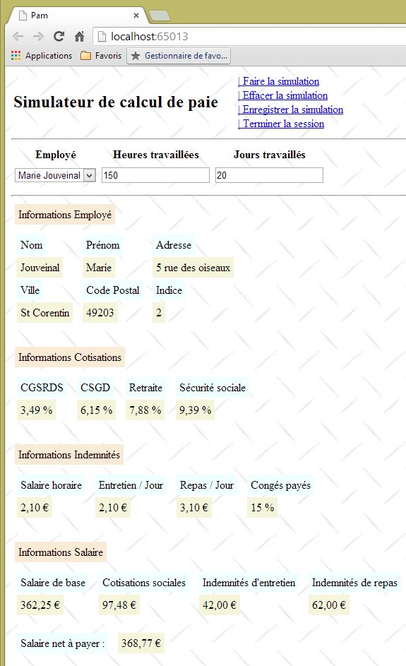
- la vista [SimulationsView], che elenca le simulazioni eseguite dal client

- la vista [VueSimulationsVides], che indica che il client non ha simulazioni o non ha più simulazioni:

- la vista [VueErreurs], che indica uno o più errori (in questo caso, il DBMS MySQL è stato arrestato):

9.3. Architettura dell'applicazione
L'architettura dell'applicazione sarà la seguente:
 |
Il livello [EF5] si riferisce all'ORM Entity Framework 5. Il DBMS utilizzato sarà MySQL.
Inizialmente realizzeremo questa applicazione con un livello [business] simulato:
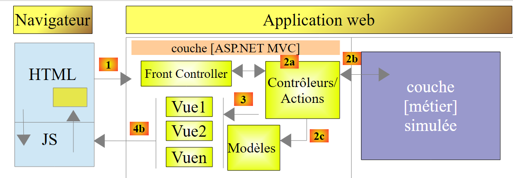 |
Questo ci permetterà di concentrarci esclusivamente sul livello [web]. Il livello [business] simulato rispetterà l'interfaccia del livello [business] effettivo. Una volta che il livello [web] sarà operativo, realizzeremo i livelli [business], [DAO] ed [EF5].
9.4. Il database
I dati statici necessari per creare la busta paga sono memorizzati in un database MySQL denominato [dbpam_ef5] (pam = Paie Assistante Maternelle). Questo database ha un amministratore denominato root senza password. Contiene tre tabelle:

Esiste una relazione di chiave esterna tra la colonna EMPLOYEES(INDEMNITE_ID) e la colonna INDEMNITIES(ID). La struttura di questo database è dettata dal suo utilizzo con EF5. Torneremo su questo argomento quando realizzeremo i livelli inferiori dell'applicazione.
Struttura:
ID: chiave primaria incrementata automaticamente dal DBMSSS: numero di previdenza sociale del dipendente - univoco NOME Cognome del dipendente NOME Nome del dipendente INDIRIZZO Indirizzo del dipendente CITTÀ Città del dipendente CAP Codice postale del dipendente VERSIONING Un numero intero che viene incrementato automaticamente ogni volta che il record viene modificato INDEMNITY_ID Chiave esterna sul campo [ID] della tabella [INDEMNITES]

Il suo contenuto potrebbe essere il seguente:

Struttura:
ID: chiave primaria incrementata automaticamente dal DBMSCSGRDSpercentage: contributo sociale generale + contributo al rimborso del debito socialeCSGDpercentage: contributo sociale generale deducibileSECUpercentage: previdenza socialePENSIONpercentage: pensione integrativa + assicurazione contro la disoccupazioneVERSIONING: un numero intero che viene incrementato automaticamente ogni volta che il record viene modificato

Il suo contenuto potrebbe essere il seguente:

Le aliquote dei contributi previdenziali sono indipendenti dal dipendente. La tabella precedente ha una sola riga.
ID: chiave primaria incrementata automaticamente dal DBMSINDEX: indice dello stipendio - univocoBASE_HOUR: prezzo netto in euro per un'ora di reperibilitàDAILY_MAINTENANCE: indennità giornaliera in euro per giorno di assistenzaMEAL_DAY: indennità pasto in euro per giorno di assistenzaPAID_LEAVE_ALLOWANCE: indennità per ferie pagate. Si tratta di una percentuale applicata allo stipendio base. VERSIONING: un numero intero che viene autoincrementato ogni volta che il record viene modificato

Il suo contenuto potrebbe essere il seguente:

9.5. Metodo di calcolo dello stipendio di un assistente all'infanzia
Spiegheremo ora come viene calcolato lo stipendio mensile di un assistente all'infanzia. Come esempio, useremo lo stipendio della signora Marie Jouveinal, che ha lavorato 150 ore in 20 giorni durante il periodo di paga.
e si tiene conto dei seguenti fattori: | [TOTALHOURS]: totale delle ore lavorate nel mese [TOTALDAYS]: totale dei giorni lavorati nel mese | [TOTALHOURS]=150 [TOTALDAYS] = 20 |
Lo stipendio base dell'assistente all'infanzia viene calcolato utilizzando la seguente formula: | [STIPENDIOBASE] = ([TOTALORE] * [TARIFFORA]) * (1 + [INDENNITÀCP] / 100) | [STIPENDIO BASE]=(150*[2,1])*(1+0,15)= 362,25 |
Da questo stipendio base devono essere detratti alcuni contributi previdenziali: | Contributo sociale generale e contributo al rimborso del debito sociale: [STIPENDIO DI BASE]*[CSGRDS/100] Contributo sociale generale deducibile: [STIPENDIO BASE]*[CSGD/100] Previdenza sociale, indennità di vedovanza e di vecchiaia: [STIPENDIO BASE]*[SECU/100] Pensione integrativa + AGPF + Assicurazione contro la disoccupazione: [STIPENDIO BASE]*[PENSIONE/100] | CSGRDS: 12,64 CSGD: 22,28 Previdenza sociale: 34,02 Pensione: 28,55 |
Totale contributi previdenziali: | [CONTRIBUTI SOCIALI] = [STIPENDIO BASE] * (CSGRDS + CSGD + SECU + PENSIONE) / 100 | [CONTRIBUTI SOCIALI] = 97,48 |
Inoltre, l'assistente all'infanzia ha diritto a un'indennità di soggiorno e a un'indennità di vitto per ogni giorno lavorato. Pertanto, riceve le seguenti indennità: | [Indennità]=[TOTALGIORNI]*(INDENNITÀDIVITAQUOTIDIANA+INDENNITÀPASTORIALE) | [INDENNITÀ]=104 |
Alla fine, lo stipendio netto da versare all' e che si occupa dell'assistenza all'infanzia è il seguente: | [STIPENDIO BASE] - [CONTRIBUTI PREVIDENZIALI] + [INDENNITÀ] | [STIPENDIO NETTO]=368,77 |
9.6. Il progetto Visual Studio per il livello [web]
Il progetto Visual Web Developer per l'applicazione sarà il seguente:
 |
- in [1], la struttura generale del progetto [pam-web-01];
- in [2], la cartella [Content] è dove sono memorizzate le risorse statiche del progetto:
- [indicator.gif]: l'immagine animata che mostra l'attesa del completamento di una richiesta Ajax,
- [standard.jpg]: l'immagine di sfondo per le varie viste,
- [Site.css]: il foglio di stile dell'applicazione;
- in [3], il singolo controller dell'applicazione [PamController];
- in [4], le classi richieste dall'applicazione ma che non possono essere classificate come componenti MVC:
- [ApplicationModelBinder]: la classe che consente di includere i dati dell'ambito [Application] nel modello di azione,
- [SessionModelBinder]: la classe che consente di includere i dati dell'ambito [Session] nel modello di azione,
- [Static]: una classe di supporto con metodi statici;
- in [5], i modelli dell'applicazione, siano essi modelli di azione o di vista:
- [ApplicationModel]: un modello contenente dati nell'ambito [Application],
- [SessionModel]: un modello contenente dati nell'ambito [Session],
- [Simulation]: una classe che incapsula gli elementi di una simulazione di calcolo dello stipendio,
- [IndexModel]: modello della prima vista [Index] visualizzata dall'applicazione;
- in [6], gli script JS necessari per la globalizzazione dell'applicazione;
- in [7], gli script JS della famiglia JQuery necessari per l'internazionalizzazione, la convalida lato client e la funzionalità AJAX dell'applicazione;
- in [8], [myScripts.js] è il file contenente i nostri script JS;
- in [9], le viste dell'applicazione:
- [Index]: la pagina iniziale,
- [Form]: il modulo per l'inserimento delle informazioni sui dipendenti e delle loro ore e giorni lavorati,
- [Simulation]: la vista che mostra una simulazione,
- [Simulations]: la vista che mostra l'elenco delle simulazioni eseguite,
- [Errori]: la vista che mostra un elenco di eventuali errori,
- [InitFailed]: la vista che mostra i messaggi di errore se l'inizializzazione dell'applicazione fallisce;
- in [10], la pagina master dell'applicazione [_Layout];
- in [11], i file [Web.config] e [Global.asax] utilizzati per configurare l'applicazione.
9.7. Passaggio 1 – Configurazione del livello [business] simulato
Da questo punto in poi, descriviamo i passaggi da seguire per completare il caso di studio. Dove pertinente, forniamo il numero del capitolo in modo che possiate consultarlo se necessario per completare l'attività. Alcuni elementi del progetto sono forniti in una cartella [aspnetmvc-support.zip] disponibile sul sito web di questo documento. All'interno, troverete la cartella [case-study-support] con i seguenti contenuti:

Il progetto include anche elementi presentati nei capitoli precedenti. È possibile recuperarli semplicemente copiando e incollando tra questo PDF e Visual Studio.
9.7.1. La soluzione Visual Studio per l'applicazione completa
Per prima cosa, creeremo una soluzione Visual Studio in cui creeremo due progetti:
- un progetto per il livello [business] simulato;
- un progetto per il livello web MVC.
 |
Utilizzeremo due strumenti:
- Visual Studio Express 2012 for Desktop, che verrà utilizzato per sviluppare il livello [aziendale];
- Visual Studio Express 2012 for the Web, che verrà utilizzato per sviluppare il livello [web].
Utilizzando Visual Studio Express for Desktop, creiamo una soluzione [pam-td]:
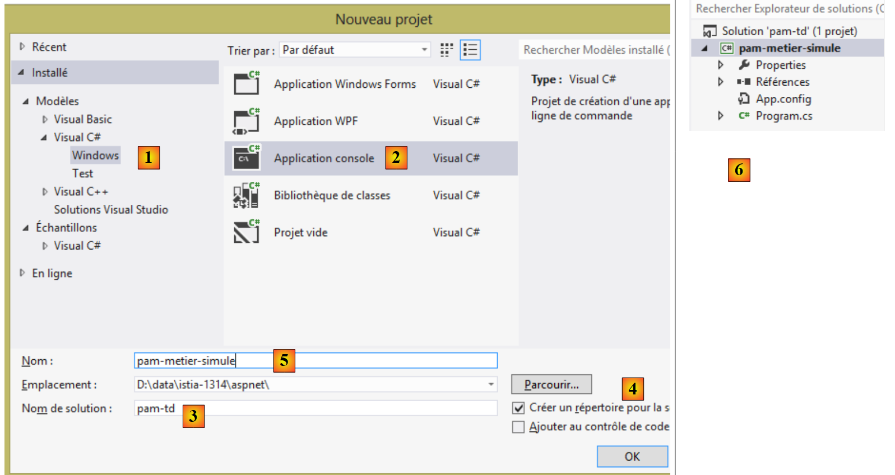 |
- In [1], selezionare un'applicazione C#;
- In [2], selezionare [Applicazione console];
- In [3], assegnare un nome alla soluzione;
- In [4], creare una directory per questa soluzione;
- in [5], assegnare un nome al livello [business];
- in [6], la soluzione generata.
9.7.2. L'interfaccia del livello [business]
In un'architettura a livelli, è buona pratica che la comunicazione tra i livelli avvenga tramite interfacce:
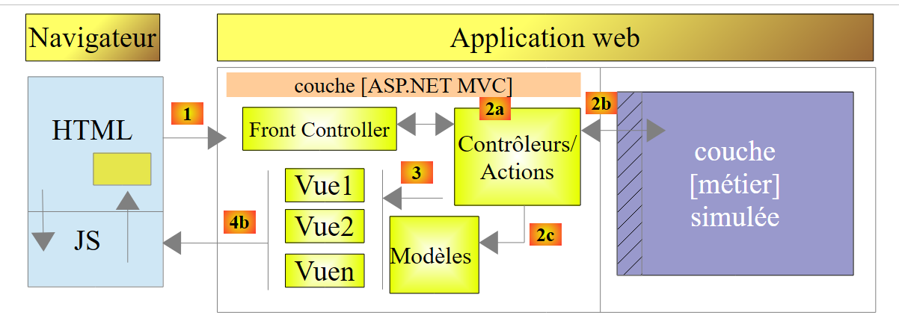 |
Quale interfaccia dovrebbe presentare il livello [business] al livello [web]? Quali interazioni sono possibili tra questi due livelli? Ricordiamo l'interfaccia web che verrà presentata all'utente:
 |
- Alla prima visualizzazione del modulo, l'elenco dei dipendenti dovrebbe apparire in [1]. È sufficiente un elenco semplificato (Cognome, Nome, SSN). Il SSN è necessario per accedere a informazioni aggiuntive sul dipendente selezionato (campi da 6 a 11).
- Le informazioni da 12 a 15 sono le varie aliquote contributive.
- Le informazioni da 16 a 19 sono le indennità del dipendente
- Le voci da 20 a 24 sono le componenti salariali calcolate in base ai dati inseriti dall'utente nelle voci da 1 a 3.
L'interfaccia [IPamMetier] fornita al livello [web] dal livello [business] deve soddisfare i requisiti di cui sopra. Esistono molte interfacce possibili. Proponiamo la seguente:
using Pam.Metier.Entites;
namespace Pam.Metier.Service
{
public interface IPamMetier
{
// list of all employee identities
Employe[] GetAllIdentitesEmployes();
// ------- salary calculation
FeuilleSalaire GetSalaire(string ss, double heuresTravaillées, int joursTravaillés);
}
}
- riga 7: il metodo che popolerà la casella combinata [1]
- riga 10: il metodo che recupererà le informazioni da 6 a 24. Queste sono state raccolte in un oggetto di tipo [PayrollSheet], che descriveremo tra poco.
Inseriremo questa interfaccia in una cartella [business/department]:
 |
9.7.3. Entità nel livello [business]
L'interfaccia precedente utilizza due classi, [Employee] e [PayStub], che dobbiamo definire:
- [Employee] rappresenta una riga nella tabella [employees] del database;
- [PayStub] rappresenta la busta paga di un dipendente.
Le entità saranno collocate in una cartella [business/entities] all'interno del progetto:
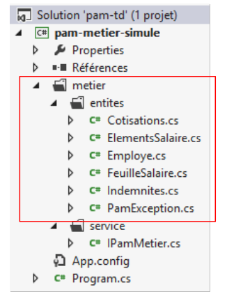 |
Nell'architettura finale, il livello [business] gestirà le rappresentazioni delle entità del database:
Useremo le seguenti classi per rappresentare le righe delle tre tabelle del database. Fare riferimento alla Sezione 9.4 per i significati dei vari campi.
Classe [Employee]
Rappresenta una riga nella tabella [employees]. Il suo codice è il seguente:
using System;
namespace Pam.Metier.Entites
{
public class Employe
{
public string SS { get; set; }
public string Nom { get; set; }
public string Prenom { get; set; }
public string Adresse { get; set; }
public string Ville { get; set; }
public string CodePostal { get; set; }
public Indemnites Indemnites { get; set; }
// signature
public override string ToString()
{
return string.Format("Employé[{0},{1},{2},{3},{4},{5}]", SS, Nom, Prenom, Adresse, Ville, CodePostal);
}
}
}
Classe [Indennità]
Rappresenta una riga nella tabella [indemnites]. Il suo codice è il seguente:
using System;
namespace Pam.Metier.Entites
{
public class Indemnites
{
public int Indice { get; set; }
public double BaseHeure { get; set; }
public double EntretienJour { get; set; }
public double RepasJour { get; set; }
public double IndemnitesCp { get; set; }
// signature
public override string ToString()
{
return string.Format("Indemnités[{0},{1},{2},{3},{4}]", Indice, BaseHeure, EntretienJour, RepasJour, IndemnitesCp);
}
}
}
Classe [Contributi]
Rappresenta una riga nella tabella [contributions]. Il suo codice è il seguente:
using System;
namespace Pam.Metier.Entites
{
public class Cotisations
{
public double CsgRds { get; set; }
public double Csgd { get; set; }
public double Secu { get; set; }
public double Retraite { get; set; }
// signature
public override string ToString()
{
return string.Format("Cotisations[{0},{1},{2},{3}]", CsgRds, Csgd, Secu, Retraite);
}
}
}
Si noti che le classi non includono le colonne [ID] e [VERSIONING] delle tabelle. Queste colonne, utili quando si utilizza l'ORM EF5, non sono necessarie nel contesto del livello [business] simulato.
La classe [FeuilleS al] incapsula le informazioni da 6 a 24 del modulo già presentato:
namespace Pam.Metier.Entites
{
public class FeuilleSalaire
{
// automatic properties
public Employe Employe { get; set; }
public Cotisations Cotisations { get; set; }
public ElementsSalaire ElementsSalaire { get; set; }
// ToString
public override string ToString()
{
return string.Format("[{0},{1},{2}]", Employe, Cotisations, ElementsSalaire);
}
}
}
- riga 7: campi da 6 a 11 per il dipendente di cui si sta calcolando lo stipendio e campi da 16 a 19 per le relative indennità. Si noti che un oggetto [Employee] incapsula un oggetto [Allowances] che rappresenta le relative indennità;
- riga 8: informazioni da 12 a 15;
- riga 9: informazioni da 20 a 24;
- righe 12–14: il metodo [ToString].
La classe [Elements Salaire] incapsula le informazioni da 20 a 24 del modulo:
namespace Pam.Metier.Entites
{
public class ElementsSalaire
{
// automatic properties
public double SalaireBase { get; set; }
public double CotisationsSociales { get; set; }
public double IndemnitesEntretien { get; set; }
public double IndemnitesRepas { get; set; }
public double SalaireNet { get; set; }
// ToString
public override string ToString()
{
return string.Format("[{0} : {1} : {2} : {3} : {4} ]", SalaireBase, CotisationsSociales, IndemnitesEntretien, IndemnitesRepas, SalaireNet);
}
}
}
- righe 6–10: componenti dello stipendio come spiegato nelle regole aziendali sopra descritte;
- riga 6: lo stipendio base del dipendente, calcolato in base al numero di ore lavorate;
- riga 7: contributi detratti da questo stipendio base;
- righe 8 e 9: indennità da aggiungere allo stipendio base, in base al grado del dipendente e al numero di giorni lavorati;
- riga 10: lo stipendio netto da pagare;
- righe 14–17: il metodo [ToString] della classe.
9.7.4. La classe [PamException]
Creiamo un tipo di eccezione specifico per la nostra applicazione. Si tratta del seguente tipo [PamException]:
using System;
namespace Pam.Metier.Entites
{
// exceptional class
public class PamException : Exception
{
// the error code
public int Code { get; set; }
// manufacturers
public PamException()
{
}
public PamException(int Code)
: base()
{
this.Code = Code;
}
public PamException(string message, int Code)
: base(message)
{
this.Code = Code;
}
public PamException(string message, Exception ex, int Code)
: base(message, ex)
{
this.Code = Code;
}
}
}
- riga 6: la classe deriva dalla classe [Exception];
- riga 10: ha una proprietà pubblica [Code] che è un codice di errore;
- Nella nostra applicazione, useremo due tipi di costruttori:
- quello alle righe 23–27, che può essere utilizzato come mostrato di seguito:
- (continua)
- oppure quello alle righe 29–33, progettato per propagare un'eccezione che si è verificata avvolgendo la stessa in un'eccezione [PamException]:
try{
....
}catch (IOException ex){
// on encapsule l'exception ex
throw new PamException("Problème d'accès aux données",ex,10);
}
Questo secondo metodo ha il vantaggio di non perdere le informazioni che la prima eccezione potrebbe contenere.
9.7.5. Implementazione del livello [business]
L'interfaccia [IPamMetier] sarà implementata dalla seguente classe [PamMetier]:
using System;
using Pam.Metier.Entites;
using System.Collections.Generic;
namespace Pam.Metier.Service
{
public class PamMetier : IPamMetier
{
// list of cached employees
public Employe[] Employes { get; set; }
// employees indexed by their SS number
private IDictionary<string, Employe> dicEmployes = new Dictionary<string, Employe>();
// list of employees
public Employe[] GetAllIdentitesEmployes()
{
...
// we return the list of employees
return Employes;
}
// salary calculation
public FeuilleSalaire GetSalaire(string ss, double heuresTravaillées, int joursTravaillés)
{
...
}
}
- riga 7: la classe [PamMetier] implementa l'interfaccia [IPamMetier];
- riga 10: la classe [PamMetier] mantiene l'elenco dei dipendenti nella cache;
- riga 12: un dizionario che associa un dipendente al proprio numero di previdenza sociale;
- righe 15–20: il metodo che restituisce l'elenco dei dipendenti;
- righe 23–26: il metodo che calcola lo stipendio di un dipendente.
Il metodo [GetAllIdentitesEmploye] è il seguente:
// list of employees
public Employe[] GetAllIdentitesEmployes()
{
if (Employes == null)
{
// we create a table of three employees
Employes = new Employe[3];
Employes[0] = new Employe()
{
SS = "254104940426058",
Nom = "Jouveinal",
Prenom = "Marie",
Adresse = "5 rue des oiseaux",
Ville = "St Corentin",
CodePostal = "49203",
Indemnites = new Indemnites() { Indice = 2, BaseHeure = 2.1, EntretienJour = 2.1, RepasJour = 3.1, IndemnitesCp = 15 }
};
dicEmployes.Add(Employes[0].SS, Employes[0]);
Employes[1] = new Employe()
{
SS = "260124402111742",
Nom = "Laverti",
Prenom = "Justine",
Adresse = "La brûlerie",
Ville = "St Marcel",
CodePostal = "49014",
Indemnites = new Indemnites() { Indice = 1, BaseHeure = 1.93, EntretienJour = 2, RepasJour = 3, IndemnitesCp = 12 }
};
dicEmployes.Add(Employes[1].SS, Employes[1]);
// a fictitious employee who will not be included in the dictionary
// to simulate a non-existent employee
Employes[2] = new Employe()
{
SS = "XX",
Nom = "X",
Prenom = "X",
Adresse = "X",
Ville = "X",
CodePostal = "X",
Indemnites = new Indemnites() { Indice = 0, BaseHeure = 0, EntretienJour = 0, RepasJour = 0, IndemnitesCp = 0 }
};
}
// we return the list of employees
return Employes;
}
- riga 4: controlliamo se l'elenco dei dipendenti non è già stato creato;
- riga 7: in caso contrario, creare un array di tre dipendenti;
- righe 8–17: il primo dipendente;
- riga 18: viene aggiunto al dizionario;
- righe 19–28: il secondo dipendente;
- riga 29: viene aggiunto al dizionario;
- righe 32–42: il terzo dipendente. Questo non viene aggiunto al dizionario per un motivo che spiegheremo.
Il metodo [GetSalary] sarà il seguente:
// salary calculation
public FeuilleSalaire GetSalaire(string ss, double heuresTravaillées, int joursTravaillés)
{
// we retrieve employee n° SS
Employe e = dicEmployes.ContainsKey(ss) ? dicEmployes[ss] : null;
// exists?
if (e == null)
{
throw new PamException(string.Format("L'employé de n° SS [{0}] n'existe pas", ss), 10);
}
// a fictitious payslip is returned
return new FeuilleSalaire()
{
Employe = e,
Cotisations = new Cotisations() { CsgRds = 3.49, Csgd = 6.15, Secu = 9.38, Retraite = 7.88 },
ElementsSalaire = new ElementsSalaire() { CotisationsSociales = 100, IndemnitesEntretien = 100, IndemnitesRepas = 100, SalaireBase = 100, SalaireNet = 100 }
};
}
- riga 2: il metodo riceve il numero di previdenza sociale del dipendente per il quale vogliamo calcolare lo stipendio, il numero di ore lavorate e il numero di giorni lavorati;
- riga 5: cerchiamo il dipendente nel dizionario. Ricordiamo che uno di essi non è presente;
- righe 7–10: se il dipendente non viene trovato, viene generata un'eccezione [PamException];
- righe 12–17: viene restituita una busta paga fittizia.
9.7.6. Il test da console per il livello [business]
Il progetto del livello [business] attualmente si presenta così:
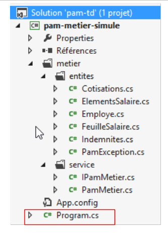 |
La classe [Program] sopra riportata testerà i metodi dell'interfaccia [IPamMetier]. Un esempio di base potrebbe essere il seguente:
using Pam.Metier.Entites;
using Pam.Metier.Service;
using System;
namespace Pam.Metier.Tests
{
class Program
{
public static void Main()
{
// instantiation layer [business]
IPamMetier pamMetier = new PamMetier();
// list of employees
Employe[] employes = pamMetier.GetAllIdentitesEmployes();
Console.WriteLine("Liste des employés--------------------");
foreach (Employe e in employes)
{
Console.WriteLine(e);
}
// payslip calculations
Console.WriteLine("Calculs de feuilles de salaire-----------------");
Console.WriteLine(pamMetier.GetSalaire(employes[0].SS, 30, 5));
Console.WriteLine(pamMetier.GetSalaire(employes[1].SS, 150, 20));
try
{
Console.WriteLine(pamMetier.GetSalaire(employes[2].SS, 150, 20));
}
catch (PamException ex)
{
Console.WriteLine(string.Format("PamException : {0}", ex.Message));
}
}
}
}
- riga 12: istanziamento del livello [business];
- righe 14–19: test del metodo [GetAllEmployeeIDs] dell'interfaccia [IPamMetier];
- righe 21–31: test del metodo [GetSalaire] dell'interfaccia [IPamMetier].
L'esecuzione di questo programma da console produce i seguenti risultati:
Il lettore è invitato a stabilire il collegamento tra questi risultati e il codice eseguito.
Per poter utilizzare questo progetto nel progetto web che stiamo per realizzare, lo trasformeremo in una libreria di classi:
 |
- in [1], nelle proprietà del file [Program.cs];
- in [2], specifichiamo che il file non farà parte dell'assembly generato;
- in [3, 4], nelle proprietà del progetto [pam-metier-simule], sotto l'opzione [Application] [3], specifichiamo [4] che la compilazione deve produrre una libreria di classi (sotto forma di DLL).
 |
- in [5], si specifica un assembly [Release]. L'altro tipo è [Debug]. L'assembly contiene quindi informazioni volte a facilitare il debug;
- In [6], generare il progetto [pam-metier-simule];
 |
- In [7], visualizzare tutti i file nella soluzione;
- In [8], nella cartella [bin/Release], la DLL per il nostro progetto.
9.8. Fase 2: Configurazione dell'applicazione web
Nella soluzione Visual Studio precedente, creeremo il progetto per il livello web MVC.
 |
Utilizzando Visual Studio Express for the Web, apriamo la soluzione [pam-td] creata in precedenza con Visual Studio Express for the Desktop.
 |
- In [1], la soluzione [pam-td] è stata caricata in Visual Studio Express for the Web;
- In [2], la soluzione e il progetto per il livello [business] simulato che abbiamo appena creato.
In questa nuova fase, creeremo lo scheletro dell'applicazione web.
 |
- In [1], aggiungiamo un nuovo progetto alla soluzione [pam-td];
 |
- in [2], selezioniamo un progetto ASP.NET MVC 4;
- denominato [pam-web-01] [3];
- In [4], selezionare il modello Basic ASP.NET MVC;
- in [5], il progetto viene creato;
 |
- in [6], impostiamo il nuovo progetto come progetto di avvio della soluzione, ovvero quello che verrà eseguito quando premiamo [Ctrl-F5];
- In [7], il nome del nuovo progetto è in grassetto, a indicare che si tratta del progetto di avvio della soluzione.
Ora, utilizzando Esplora file di Windows, sostituisci la cartella [Content] del progetto con la cartella [étudedecas-support / web / Content]. Una volta fatto ciò, devi includere i nuovi file nel progetto [pam-web-01]. Procedi come segue:
 |
- In [1], aggiornare la soluzione;
- in [2], visualizza tutti i file nella soluzione;
- in [3], appare una cartella [Images];
- che si include nel progetto in [4].
Nella cartella [Scripts], aggiungere gli script JQuery Globalization [1] necessari per la convalida lato client.
 |
La pagina master [_Layout.cshtml] [2] avrà il seguente contenuto:
<!DOCTYPE html>
<html>
<head>
<title>@ViewBag.Title</title>
<meta charset="utf-8" />
<meta name="viewport" content="width=device-width" />
<link rel="stylesheet" href="~/Content/Site.css" />
<script type="text/javascript" src="~/Scripts/jquery-1.8.2.min.js"></script>
<script type="text/javascript" src="~/Scripts/jquery.validate.min.js"></script>
<script type="text/javascript" src="~/Scripts/jquery.validate.unobtrusive.min.js"></script>
<script type="text/javascript" src="~/Scripts/globalize/globalize.js"></script>
<script type="text/javascript" src="~/Scripts/globalize/cultures/globalize.culture.fr-FR.js"></script>
<script type="text/javascript" src="~/Scripts/jquery.unobtrusive-ajax.js"></script>
<script type="text/javascript" src="~/Scripts/myScripts.js"></script>
</head>
<body>
<table>
<tbody>
<tr>
<td>
<h2>Simulateur de calcul de paie</h2>
</td>
<td style="width: 20px">
<img id="loading" style="display: none" src="~/Content/images/indicator.gif" />
</td>
<td>
<a id="lnkFaireSimulation" href="javascript:faireSimulation()">| Faire la simulation<br />
</a>
<a id="lnkEffacerSimulation" href="javascript:effacerSimulation()">| Effacer la simulation<br />
</a>
<a id="lnkVoirSimulations" href="javascript:voirSimulations()">| Voir les simulations<br />
</a>
<a id="lnkRetourFormulaire" href="javascript:retourFormulaire()">| Retour au formulaire de simulation<br />
</a>
<a id="lnkEnregistrerSimulation" href="javascript:enregistrerSimulation()">| Enregistrer la simulation<br />
</a>
<a id="lnkTerminerSession" href="javascript:terminerSession()">| Terminer la session<br />
</a>
</td>
</tbody>
</table>
<hr />
<div id="content">
@RenderBody()
</div>
</body>
</html>
Nota: alla riga 8, modifica la versione di jQuery in modo che corrisponda alla tua versione di Visual Studio.
- Riga 7: riferimento al foglio di stile dell'applicazione;
- Righe 8–10: riferimenti agli script necessari per la convalida lato client;
- righe 11–12: riferimenti agli script necessari per l'inserimento di numeri decimali francesi con la virgola;
- riga 13: riferimento agli script necessari per la modalità Ajax;
- Riga 14: script specifici dell'applicazione;
- riga 24: l'immagine di caricamento per le chiamate Ajax;
- righe 26–39: sei collegamenti JavaScript;
- Riga 43: la sezione in cui verranno visualizzate le varie viste dell'applicazione;
- Riga 44: il corpo delle varie viste dell'applicazione.
Successivamente, modificheremo il percorso predefinito dell'applicazione:
 |
Il file [RouteConfig] avrà il seguente contenuto:
using System.Web.Mvc;
using System.Web.Routing;
namespace pam_web_01
{
public class RouteConfig
{
public static void RegisterRoutes(RouteCollection routes)
{
routes.IgnoreRoute("{resource}.axd/{*pathInfo}");
routes.MapRoute(
name: "Default",
url: "{controller}/{action}",
defaults: new { controller = "Pam", action = "Index" }
);
}
}
}
- riga 14: gli URL avranno il formato [{controller}/{action}];
- riga 15: se non viene specificata alcuna azione, verrà utilizzata l'azione [Index]. Se non viene specificato alcun controller, verrà utilizzato il controller [Pam].
Come risultato di questa configurazione, l'URL [/] è equivalente all'URL [/Pam/Index]. Poiché la nostra applicazione è un'API, l'URL [/] sarà il suo unico URL.
Creare il controller [Pam]:

Modifica [PamController] come segue:
using System.Web.Mvc;
namespace Pam.Web.Controllers
{
public class PamController : Controller
{
[HttpGet]
public ViewResult Index()
{
return View();
}
}
}
- riga 3: inseriamo il controller nello spazio dei nomi [Pam.Web.Controllers];
- riga 7: l'azione [Index] gestirà solo la richiesta HTTP GET;
- riga 8: restituiamo un tipo [ViewResult] anziché un tipo [ActionResult].
Ora creiamo la vista [Index.cshtml] visualizzata dall'azione [Index] sopra riportata:
 |
Modifica [Index.cshtml] come segue:
@{
ViewBag.Title = "Pam";
}
<h2>Formulaire</h2>
Esegui l'applicazione premendo [Ctrl-F5]. Dovresti vedere la seguente pagina:

Compito: Spiega cosa è successo.
L'applicazione utilizza un foglio di stile a cui fa riferimento la pagina master [_Layout.cshtml]:
<link rel="stylesheet" href="~/Content/Site.css" />
Il foglio di stile [/Content/Site.css] definisce un'immagine di sfondo per le pagine dell'applicazione:
body {
background-image: url("/Content/Images/standard.jpg");
}
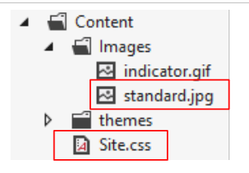 |
9.9. Passaggio 3: Implementazione del modello SPU
Vogliamo scrivere un'applicazione seguendo il modello SPU (Single-Page Application) descritto nelle sezioni 7.5 e 7.6. La singola pagina è quella caricata dal browser all'avvio dell'applicazione:
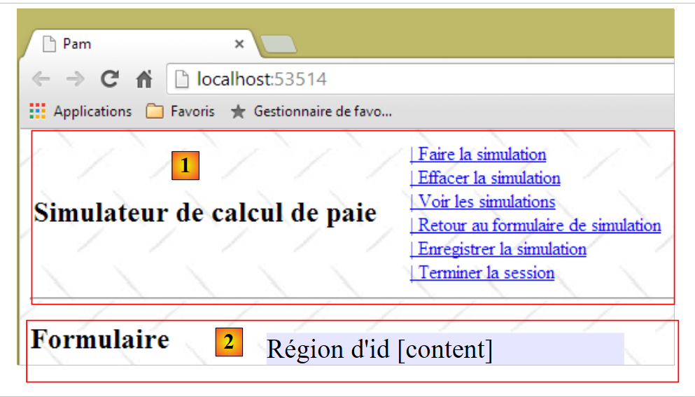 |
- la sezione [1] sopra riportata è la parte fissa della pagina singola. Abbiamo visto che è fornita dalla pagina master [_Layout.cshtml];
- La parte [2] è la parte variabile della singola pagina. Si trova all'interno dell'area con ID [content] della pagina master [_Layout.cshtml]:
<!DOCTYPE html>
<html>
<head>
<title>@ViewBag.Title</title>
...
<script type="text/javascript" src="~/Scripts/myScripts.js"></script>
</head>
<body>
<table>
...
</table>
<hr />
<div id="content">
@RenderBody()
</div>
</body>
</html>
I vari frammenti di pagina dell'applicazione verranno visualizzati nella regione con l'ID [content] alla riga 13. Verranno visualizzati tramite chiamate Ajax. Gli script JavaScript che eseguono queste chiamate si trovano nel file [myScripts.js] a cui si fa riferimento alla riga 6. Crea questo file, di cui avremo bisogno:
 |
Stiamo ora seguendo il modello APU descritto nella Sezione 7.6. Rileggi quella sezione se l'hai dimenticata. Ora configureremo i vari frammenti di pagina visualizzati dall'applicazione.
9.9.1. Strumenti di sviluppo JavaScript
Ricorda che con il browser Chrome hai a disposizione una serie di strumenti per il debug di HTML, CSS e JavaScript delle tue pagine. Questi strumenti sono stati parzialmente introdotti nella Sezione 7.2. Nel modello APU, i browser memorizzano nella cache gli script JavaScript a cui fa riferimento la prima pagina dell'applicazione. Pertanto, devi ricordarti di svuotare questa cache quando modifichi i tuoi script; altrimenti, le modifiche potrebbero non essere applicate. Ecco come farlo in Chrome:
- Premere [Ctrl-Shift-I] per aprire gli strumenti di sviluppo
 |
- Fare clic sull'icona [1] nell'angolo in basso a destra della console degli sviluppatori;
- quindi seleziona l'opzione [2] che disabilita la cache in modalità sviluppatore.
9.9.2. Utilizzo di una vista parziale per visualizzare il modulo
Il modulo di immissione dati è uno dei frammenti visualizzati dall'applicazione. Attualmente, questo modulo viene visualizzato dalla vista [Index.cshtml], che è una vista completa:
@{
ViewBag.Title = "Pam";
}
<h2>Formulaire</h2>
Questa vista viene visualizzata dall'azione [Index]:
[HttpGet]
public ViewResult Index()
{
return View();
}
La riga 4 sopra mostra che viene visualizzata una [View], non una [PartialView]. Abbiamo bisogno di una vista parziale per il modulo, che sarà un frammento di pagina. Modifichiamo la vista [Index.cshtml] come segue:
@{
ViewBag.Title = "Pam";
}
@Html.Partial("Formulaire")
Riga 4: Il modulo non fa più parte della pagina [Index.cshtml]. Ora è contenuto in una vista parziale [Form.cshtml]:
 |
Il codice per [Form.cshtml] è semplicemente il seguente:
<h2>Formulaire</h2>
Apporta queste modifiche e verifica che all'avvio dell'applicazione venga ancora visualizzata la seguente schermata:

9.9.3. La chiamata Ajax [runSimulation]
Ci interessa il frammento visualizzato quando l'utente fa clic sul link [Esegui simulazione]:
 |
- In [1], l'utente fa clic sul link [Esegui simulazione];
- in [2], la simulazione appare sotto il modulo.
Aggiorniamo la vista parziale [Formulaire.cshtml] che visualizza il modulo come segue:
<h2>Formulaire</h2>
<div id="simulation" />
Riga 3: creiamo una regione con l'ID [simulation] per contenere il frammento di simulazione.
Creiamo la seguente vista parziale [Simulation.cshtml]:
 |
Il contenuto della vista [Simulation.cshtml] è il seguente:
<hr />
<h2>Simulation</h2>
Ora dobbiamo scrivere il codice JavaScript che gestisce il clic sul link [Esegui simulazione]. Seguiremo la procedura descritta nella Sezione 7.6.5. Per prima cosa, diamo un'occhiata al codice HTML del link in [_Layout.cshtml]:
<a id="lnkFaireSimulation" href="javascript:faireSimulation()">| Faire la simulation<br />
</a>
Possiamo vedere che cliccando sul link [Esegui simulazione] si attiverà l'esecuzione della funzione JS [runSimulation]. Questa funzione verrà scritta nel file [myScripts.js], insieme alle altre funzioni JS richieste dall'applicazione:
// global variables
var loading;
var content;
function faireSimulation() {
// make a manual Ajax call
...
}
function effacerSimulation() {
// delete form entries
...
}
function enregistrerSimulation() {
// make a manual Ajax call
...
}
function voirSimulations() {
// make a manual Ajax call
...
}
function retourFormulaire() {
// make a manual Ajax call
...
}
function terminerSession() {
...
}
// document loading
$(document).ready(function () {
// retrieve the references of the page's various components
loading = $("#loading");
content = $("#content");
});
- righe 35–39: la funzione jQuery eseguita all'avvio dell'applicazione;
- righe 37-38: inizializza le variabili globali delle righe 2 e 3.
Si noti che gli elementi con gli ID [loading] e [content] sono definiti nella pagina master [_Layout.cshtml] (righe 14 e 21 di seguito):
<!DOCTYPE html>
<html>
<head>
...
</head>
<body>
<table>
<tbody>
<tr>
<td>
<h2>Simulateur de calcul de paie</h2>
</td>
<td style="width: 20px">
<img id="loading" style="display: none" src="~/Content/images/indicator.gif" />
</td>
...
</td>
</tbody>
</table>
<hr />
<div id="content">
@RenderBody()
</div>
</body>
</html>
Compito: seguendo la procedura descritta nella Sezione 7.6.5, scrivi la funzione JS [faireSimulation]. Questa funzione invierà una richiesta Ajax di tipo POST all'azione [/Pam/FaireSimulation]. Al momento non verranno inviati dati. L'azione [/Pam/FaireSimulation] restituirà la vista parziale [Simulation.cshtml] alla funzione JS [faireSimulation], che inserirà quindi questo output HTML nella regione con l'ID [simulation] del modulo.
Prova il link [Esegui simulazione] nella tua applicazione.
9.9.4. La chiamata Ajax [enregistrerSimulation]
Il link [Salva simulazione] è definito come segue in [_Layout.cshtml]:
<a id="lnkEnregistrerSimulation" href="javascript:enregistrerSimulation()">| Enregistrer la simulation<br />
</a>
Compito: seguendo i passaggi precedenti, scrivi la funzione JS [enregistrerSimulation]. Questa funzione invierà una chiamata Ajax di tipo POST all'azione [/Pam/EnregistrerSimulation]. In questa fase non verranno inviati dati. L'azione [/Pam/EnregistrerSimulation] restituirà la vista parziale [Simulations.cshtml] alla funzione JS [enregistrerSimulation], che inserirà quindi questo flusso HTML nella regione con id [content] nella pagina master.
La vista [Simulations.cshtml] è la seguente:
 |
Il suo contenuto è il seguente:
<h2>Simulations</h2>
Ecco un esempio di esecuzione:


9.9.5. La chiamata Ajax [viewSimulations]
Il link [Visualizza simulazioni] è definito come segue in [_Layout.cshtml]:
<a id="lnkVoirSimulations" href="javascript:voirSimulations()">| Voir les simulations<br />
</a>
Compito: seguendo la procedura precedente, scrivi la funzione JS [viewSimulations]. Questa funzione invierà una chiamata Ajax di tipo POST all'azione [/Pam/ViewSimulations]. Per ora non verranno inviati dati. L'azione [/Pam/VoirSimulations] restituirà la vista parziale [Simulations.cshtml] alla funzione JS [voirSimulations], che inserirà quindi questo output HTML nella regione con id [content] nella pagina master.
La vista [Simulations.cshtml] è quella già utilizzata nella domanda precedente.
Ecco un esempio di esecuzione:
 |
9.9.6. La chiamata Ajax [returnToForm]
Il link [Torna al modulo di simulazione] è definito come segue in [_Layout.cshtml]:
<a id="lnkRetourFormulaire" href="javascript:retourFormulaire()">| Retour au formulaire de simulation<br />
</a>
Compito: seguendo i passaggi precedenti, scrivere la funzione JS [returnForm]. Questa funzione invierà una richiesta Ajax di tipo POST all'azione [/Pam/Form]. In questa fase non verranno inviati dati. L'azione [/Pam/Formulaire] restituirà la vista parziale [Formulaire.cshtml] alla funzione JS [retourFormulaire], che inserirà quindi questo flusso HTML nella regione con l'id [content] nella pagina master.
La vista [Formulaire.cshtml] è già stata definita. Ecco un esempio di esecuzione:
 |
9.9.7. La chiamata Ajax [endSession]
Il link [End Session] è definito come segue in [_Layout.cshtml]:
<a id="lnkTerminerSession" href="javascript:terminerSession()">| Terminer la session<br />
</a>
Compito: seguendo la procedura precedente, scrivere la funzione JS [terminerSession]. Questa funzione invierà una chiamata Ajax di tipo POST all'azione [/Pam/TerminerSession]. Per ora non verranno inviati dati. L'azione [/Pam/TerminerSession] restituirà la vista parziale [Formulaire.cshtml] alla funzione JS [terminerSession], che inserirà quindi questo flusso HTML nella regione con l'id [content] nella pagina master.
Ecco un esempio di esecuzione:
 |
9.9.8. La funzione JS [clearSimulation]
Il link [Clear Simulation] è definito come segue in [_Layout.cshtml]:
<a id="lnkEffacerSimulation" href="javascript:effacerSimulation()">| Effacer la simulation<br />
</a>
Lo scopo della funzione JS [clearSimulation] è:
- nascondere il frammento [Simulation] se esiste;
- ripristinare i campi di immissione del modulo allo stato in cui si trovavano al momento del caricamento iniziale dell'applicazione (quando sono presenti campi di immissione; per ora non ce ne sono).
Compito: Scrivere la funzione JS [clearSimulation]. Qui non c'è alcuna chiamata Ajax. Questo processo avviene all'interno del browser e non coinvolge il server.
Ecco un esempio di esecuzione:
 |
9.9.9. Gestione della navigazione tra le schermate
Per ora, i link sono sempre visualizzati. Ora gestiremo la loro visualizzazione utilizzando una funzione JavaScript. Per prima cosa, rivediamo il codice dei sei link JavaScript in [_Layout.cshtml]:
<a id="lnkFaireSimulation" href="javascript:faireSimulation()">| Faire la simulation<br />
</a>
<a id="lnkEffacerSimulation" href="javascript:effacerSimulation()">| Effacer la simulation<br />
</a>
<a id="lnkVoirSimulations" href="javascript:voirSimulations()">| Voir les simulations<br />
</a>
<a id="lnkRetourFormulaire" href="javascript:retourFormulaire()">| Retour au formulaire de simulation<br />
</a>
<a id="lnkEnregistrerSimulation" href="javascript:enregistrerSimulation()">| Enregistrer la simulation<br />
</a>
<a id="lnkTerminerSession" href="javascript:terminerSession()">| Terminer la session<br />
</a>
Tutti i link hanno un attributo [id] che ci permetterà di gestirli in JavaScript. Modifichiamo il metodo JavaScript eseguito al caricamento della pagina come segue:
// variables globales
var loading;
var content;
var lnkFaireSimulation;
var lnkEffacerSimulation
var lnkEnregistrerSimulation;
var lnkTerminerSession;
var lnkVoirSimulations;
var lnkRetourFormulaire;
var options;
...
// au chargement du document
$(document).ready(function () {
// on récupère les références des différents composants de la page
loading = $("#loading");
content = $("#content");
// les liens du menu
lnkFaireSimulation = $("#lnkFaireSimulation");
lnkEffacerSimulation = $("#lnkEffacerSimulation");
lnkEnregistrerSimulation = $("#lnkEnregistrerSimulation");
lnkVoirSimulations = $("#lnkVoirSimulations");
lnkTerminerSession = $("#lnkTerminerSession");
lnkRetourFormulaire = $("#lnkRetourFormulaire");
// on les met dans un tableau
options = [lnkFaireSimulation, lnkEffacerSimulation, lnkEnregistrerSimulation, lnkVoirSimulations, lnkTerminerSession, lnkRetourFormulaire];
// on cache certains éléments de la page
loading.hide();
// on fixe le menu
setMenu([lnkFaireSimulation, lnkVoirSimulations, lnkTerminerSession]);
});
- righe 19–24: si recuperano i riferimenti per i sei collegamenti. Questi riferimenti sono definiti come variabili globali alle righe 4–9;
- riga 26: l'array [options] viene inizializzato con i sei riferimenti. Questo array è definito come variabile globale alla riga 10;
- riga 28: nascondere l'immagine animata che indica che sono in corso delle chiamate Ajax;
- riga 30: vengono visualizzati i link [lnkFaireSimulation, lnkVoirSimulations, lnkTerminerSession]. Gli altri saranno nascosti.
La funzione JS [setMenu] è la seguente:
function setMenu(show) {
// display table links [show]
...
}
Compito: Scrivere la funzione JS [setMenu].
Se T è un array di link:
- T.length è il numero di link;
- T[i] è il link numero i;
- T[i].show() visualizza il link numero i;
- T[i].hide() nasconde il link numero i.
Con queste nuove funzioni JS, la pagina visualizzata all'avvio è la seguente:

Adatta le funzioni JS [runSimulation, clearSimulation, saveSimulation, viewSimulations, returnToForm, endSession] per visualizzare le seguenti schermate:


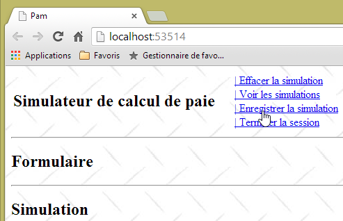


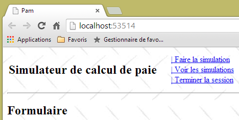


Ora che il modello APU e i collegamenti di navigazione sono stati implementati, possiamo passare alla scrittura delle azioni e delle viste lato server. Man mano che procedi con i passaggi, noterai che alcuni dei collegamenti Ajax attualmente funzionanti smetteranno di funzionare, poiché modificherai le viste parziali inviate al client. Man mano che sviluppi le varie azioni e viste lato server, i collegamenti Ajax lato client torneranno a funzionare come previsto.
9.10. Passaggio 4: Scrittura dell'azione server [Index]
Attualmente, all'avvio dell'applicazione, viene visualizzata la seguente schermata:
Al posto di questa schermata, vorremmo vedere quanto segue:

È l'azione [Index] che deve generare questa pagina. Facciamo alcune osservazioni:
- La pagina mostra un modulo con tre campi di immissione:
- il dipendente di cui si sta calcolando lo stipendio,
- il numero di ore lavorate,
- il numero di giorni lavorati;
- il modulo viene inviato tramite il link [Esegui simulazione];
- è necessario verificare la validità dei campi di immissione [Ore lavorate] e [Giorni lavorati];
- l'elenco dei dipendenti proviene dal livello [azienda] che abbiamo creato in precedenza.
Rivediamo il codice attuale per l'azione [Indice]:
[HttpGet]
public ViewResult Index()
{
return View();
}
quello della vista [Index.cshtml] che questa azione visualizza:
@{
ViewBag.Title = "Pam";
}
@Html.Partial("Formulaire")
e la vista parziale [Formulaire.cshtml]:
<h2>Formulaire</h2>
Le modifiche verranno apportate in queste tre posizioni.
9.10.1. Il modello del modulo
Torniamo al flusso di elaborazione dell'URL [/Pam/Index]:
 |
- la richiesta HTTP del client arriva a [1];
- al punto [2], le informazioni contenute nella richiesta vengono convertite in un modello di azione [3] che funge da input per l'azione [4];
- al punto [4], l'azione, basata su questo modello, genererà una risposta. Questa risposta avrà due componenti: una vista V [6] e il modello M di questa vista [5];
- la vista V [6] utilizzerà il proprio modello M [5] per generare la risposta HTTP per il client.
L'azione che ci interessa è l'azione [Index], che attualmente si presenta così:
[HttpGet]
public ViewResult Index()
{
return View();
}
L'azione [Index] non passa alcun modello alla vista [Index.cshtml]. Pertanto, non sarà in grado di visualizzare l'elenco dei dipendenti. Questo elenco può essere richiesto dal livello [business]. Per farlo, il progetto [pam-web-01] deve avere un riferimento al progetto [pam-metier-simule]. Creeremo ora questo riferimento:
 |
- in [1], fare clic con il tasto destro del mouse su [Riferimenti] nel progetto [pam-web-01], quindi selezionare [Aggiungi riferimento];
- in [2], selezionare l'opzione [Soluzione], quindi il progetto [pam-metier-simule] in [3];
- in [4], il progetto [pam-metier-simule] è stato aggiunto ai riferimenti del progetto [pam-web-01].
9.10.2. Il modello dell'applicazione
Abbiamo introdotto i concetti importanti del modello di applicazione e del modello di sessione nella Sezione 4.10, a pagina 70. Ora li useremo. Ricordiamo che nel modello inseriamo:
- un modello di applicazione contenente dati di sola lettura per tutti gli utenti. Questo modello costituisce una memoria condivisa per tutte le richieste provenienti da tutti gli utenti;
- dati di sessione in lettura-scrittura per un determinato utente. Questo modello costituisce una memoria condivisa per tutte le richieste provenienti da quell'utente.
Cosa includeremo nel modello di applicazione? Rivediamo la sua architettura:
 |
Il livello [web] contiene un riferimento al livello [business]. Questo può essere condiviso da tutti gli utenti. Possiamo quindi inserirlo nel modello dell'applicazione. Inoltre, supporremo che l'elenco dei dipendenti non cambi. Può quindi essere letto una volta e poi condiviso tra tutti gli utenti. Proponiamo quindi il seguente modello dell'applicazione:
 |
Il codice per la classe [ApplicationModel] potrebbe essere il seguente:
using Pam.Metier.Entites;
using Pam.Metier.Service;
namespace PamWeb.Models
{
public class ApplicationModel
{
// --- application scope data ---
public Employe[] Employes { get; set; }
public IPamMetier PamMetier { get; set; }
}
}
Per visualizzare un elenco a discesa in una vista, si scrive qualcosa di simile a quanto segue:
<!-- the drop-down list -->
<tr>
<td>Liste déroulante</td>
<td>@Html.DropDownListFor(m => m.DropDownListField,
new SelectList(@Model.DropDownListFieldItems, "Value", "Label"))
</td>
</tr>
Il metodo [DropDownListFor] richiede un tipo SelectListItem[] come secondo parametro, che è stato fornito sopra da un tipo [SelectList]. Dobbiamo costruire un array di questo tipo con l'elenco dei dipendenti. Poiché i dipendenti non cambiano, questo array può essere inserito anche nel modello dell'applicazione. Lo aggiorniamo come segue:
using Pam.Metier.Entites;
using Pam.Metier.Service;
using System.Web.Mvc;
namespace Pam.Web.Models
{
public class ApplicationModel
{
// --- application scope data ---
public Employe[] Employes { get; set; }
public IPamMetier PamMetier { get; set; }
public SelectListItem[] EmployesItems { get; set; }
}
}
Quando dovrebbe essere costruito questo modello? Lo abbiamo dimostrato nella Sezione 4.10. Ciò avviene quando viene eseguito il metodo [Application_Start] nel file [Global.asax]:
 |
Il metodo [Application_Start] è attualmente il seguente:
using System.Web.Http;
using System.Web.Mvc;
using System.Web.Optimization;
using System.Web.Routing;
namespace pam_web_01
{
public class MvcApplication : System.Web.HttpApplication
{
protected void Application_Start()
{
AreaRegistration.RegisterAllAreas();
WebApiConfig.Register(GlobalConfiguration.Configuration);
FilterConfig.RegisterGlobalFilters(GlobalFilters.Filters);
RouteConfig.RegisterRoutes(RouteTable.Routes);
BundleConfig.RegisterBundles(BundleTable.Bundles);
}
}
}
Lo estendiamo come segue:
using Pam.Metier.Entites;
using Pam.Metier.Service;
using PamWeb.Infrastructure;
using PamWeb.Models;
using System.Web.Http;
using System.Web.Mvc;
using System.Web.Optimization;
using System.Web.Routing;
namespace pam_web_01
{
public class MvcApplication : System.Web.HttpApplication
{
protected void Application_Start()
{
// ----------Auto-generated
AreaRegistration.RegisterAllAreas();
WebApiConfig.Register(GlobalConfiguration.Configuration);
FilterConfig.RegisterGlobalFilters(GlobalFilters.Filters);
RouteConfig.RegisterRoutes(RouteTable.Routes);
BundleConfig.RegisterBundles(BundleTable.Bundles);
// -------------------------------------------------------------------
// ---------- specific configuration
// -------------------------------------------------------------------
// application scope data
ApplicationModel application = new ApplicationModel();
Application["data"] = application;
// instantiation layer [business]
application.PamMetier = ...
// employee roster
application.Employes = ...
// employee combo items
application.EmployesItems = ...
// model binder for [ApplicationModel]
...
}
}
}
Compito: Completa il codice per il metodo [Application_Start]. Tutto ciò di cui hai bisogno si trova nella sezione 4.10. Prenditi il tempo necessario per rileggere questa sezione, lunga ma importante.
La riga 33 è in realtà composta da diverse righe. Per creare un oggetto di tipo [SelectListItem], puoi utilizzare il seguente metodo:
new SelectListItem() { Text = unTexte, Value = uneValeur };
Questo [SelectListItem] verrà utilizzato per generare il seguente tag HTML: <option>
nell'elenco a discesa. Ci assicureremo che:
- il testo sia il nome del dipendente seguito dal cognome;
- aValue sia il numero di previdenza sociale del dipendente.
Alla riga 35, sopra, sarà necessaria la classe [ApplicationModelBinder] descritta nella sezione 4.10, pagina 74:
 |
9.10.3. Il codice per l'azione [Index]
Ora che abbiamo definito un modello per l'applicazione, possiamo aggiornare il codice per l'azione [Index] come segue:
[HttpGet]
public ViewResult Index(ApplicationModel application)
{
return View();
}
- Riga 4: Il modello dell'applicazione è ora un parametro dell'azione [Index]. Abbiamo spiegato nella Sezione 4.10 come questo parametro venga inizializzato dal framework.
9.10.4. Il modello di vista [Index.cshtml]
Ora, l'azione [Index] ha accesso ai dipendenti memorizzati nel modello dell'applicazione. Deve ora passarli alla vista [Index.cshtml], che li visualizzerà. Potremmo passare un tipo [ApplicationModel] come modello di vista alla vista [Index.cshtml], ma vedremo subito che questa vista necessita di informazioni aggiuntive che non sono presenti in [ApplicationModel]. Useremo il seguente modello di vista [IndexModel]:
 |
namespace Pam.Web.Models
{
public class IndexModel
{
// application scope data
public ApplicationModel Application { get; set; }
}
}
- Riga 6: [IndexModel] contiene il modello dell'applicazione.
L'azione [Index] diventa la seguente:
[HttpGet]
public ViewResult Index(ApplicationModel application)
{
return View(new IndexModel() { Application = application });
}
- alla riga 4, la vista predefinita [Index.cshtml] viene visualizzata utilizzando un tipo [IndexModel] come modello, inizializzato con i dati provenienti dal modello dell'applicazione.
Sappiamo che la vista [Index.cshtml] deve visualizzare un modulo:
Torniamo al flusso di gestione delle richieste:
 |
Per la richiesta [GET /Pam/Index]:
- l'azione è [Index];
- il modello per questa azione è [ApplicationModel];
- la vista è [Index.cshtml];
- il modello per questa vista è [IndexModel].
Quando il modulo viene inviato, il flusso di elaborazione sarà simile:
- l'azione è quella che gestisce il POST;
- il suo modello raccoglie i valori inseriti, in questo caso:
- il numero di previdenza sociale del dipendente selezionato;
- il numero di ore lavorate;
- il numero di giorni lavorati;
Potremmo creare un modello di azione che combini questi tre valori. È anche comune riutilizzare il modello utilizzato per visualizzare il modulo. È quello che faremo qui. La classe [IndexModel] si evolve come segue:
using System.ComponentModel.DataAnnotations;
using System.Web.Mvc;
namespace Pam.Web.Models
{
[Bind(Exclude = "Application")]
public class IndexModel
{
// application scope data
public ApplicationModel Application { get; set; }
// posted values
[Display(Name = "Employé")]
public string SS { get; set; }
[Display(Name = "Heures travaillées")]
[UIHint("Decimal")]
public double HeuresTravaillées { get; set; }
[Display(Name = "Jours travaillés")]
public double JoursTravaillés { get; set; }
}
}
- righe 13, 16, 18: i tre valori inseriti. Si noti che [daysWorked] è stato dichiarato come tipo [double] anche se in realtà ci si aspetta un numero intero. Il tipo [double] è stato introdotto per facilitare la convalida lato client di questo campo, poiché la convalida di un tipo [int] aveva causato problemi;
- righe 12, 14, 17: etichette per i metodi [Html.LabelFor] della vista associata al modello;
- riga 15: un'annotazione per visualizzare il campo [HoursWorked] con due cifre decimali;
- riga 5: specifica che la proprietà denominata [Application] non è inclusa nei valori inviati.
9.10.5. Le viste [Index.cshtml] e [Formulaire.cshtml]
La vista [Index.cshtml] viene visualizzata dalla seguente azione [Index]:
[HttpGet]
public ViewResult Index(ApplicationModel application)
{
return View(new IndexModel() { Application = application });
}
È interessante notare che la vista [Index.cshtml] rimane invariata:
@{
ViewBag.Title = "Pam";
}
@Html.Partial("Formulaire")
- la vista non dichiara alcun modello;
- riga 4: include la vista parziale [Form.cshtml], sempre senza passarle un modello. Durante i test, è stato osservato che il modello [IndexModel] passato alla vista [Index.cshtml] veniva implicitamente propagato alla vista parziale [Form.cshtml]. Quest'ultima vista potrebbe ora assumere la seguente forma:
@model Pam.Web.Models.IndexModel
@using (Html.BeginForm("FaireSimulation", "Pam", FormMethod.Post, new { id = "formulaire" }))
{
<table>
<thead>
<tr>
...
</tr>
</thead>
<tbody>
<tr>
...
</tr>
<tr>
...
</tr>
</tbody>
</table>
}
<div id="simulation" />
- riga 1: la vista riceve un modello di tipo [IndexModel];
- riga 3: il modulo;
- righe 6–10: le intestazioni della tabella di input;
- righe 12–14: la riga di immissione;
- righe 15–17: eventuali messaggi di errore.
Compito: completare il codice per la vista [Formulaire.cshtml]. Utilizzare i metodi [DropDownListFor, EditorFor, LabelFor, ValidationMessageFor] descritti nella Sezione 5.7.
9.10.6. Test dell'azione [Index]
Abbiamo scritto tutti gli elementi della catena di elaborazione dell'URL [/Pam/Index]:
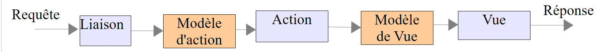 |
Testiamo l'applicazione con [Ctrl-F5]:
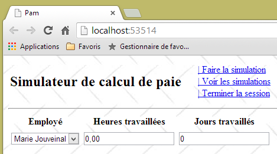

È necessario verificare che l'elenco a discesa sia stato popolato con l'elenco dei dipendenti che abbiamo definito nel livello [business] simulato.
9.11. Passaggio 5: Implementazione della convalida degli input
9.11.1. Il problema
Sebbene non abbiamo fatto nulla per abilitarla, la convalida lato client è già attiva:

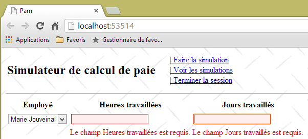
La convalida lato client è abilitata per impostazione predefinita a causa della riga 3 riportata di seguito nel file [Web.config] dell'applicazione.
<appSettings>
...
<add key="ClientValidationEnabled" value="true" />
</appSettings>
Tuttavia, poiché in [IndexModel] abbiamo dichiarato il campo [JoursTravaillés] come di tipo [double]:
public double JoursTravaillés { get; set; }
possiamo inserire un numero reale in questo campo:
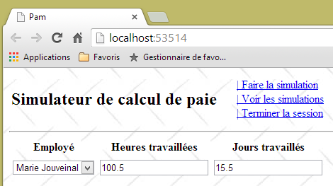
Inoltre, possiamo inserire valori arbitrari in entrambi i campi:

L'[IndexModel] del modulo è attualmente il seguente:
using System.ComponentModel.DataAnnotations;
using System.Web.Mvc;
namespace Pam.Web.Models
{
[Bind(Exclude = "Application")]
public class IndexModel
{
// application scope data
public ApplicationModel Application { get; set; }
// posted values
[Display(Name = "Employé")]
public string SS { get; set; }
[Display(Name = "Heures travaillées")]
[UIHint("Decimal")]
public double HeuresTravaillées { get; set; }
[Display(Name = "Jours travaillés")]
public double JoursTravaillés { get; set; }
}
}
Compito: Migliora questo modello in modo che:
- visualizzare messaggi di errore personalizzati;
- accettare solo valori reali compresi nell'intervallo [0,400] per il campo [HoursWorked];
- accettare solo valori interi nell'intervallo [0,31] per il campo [DaysWorked];
È possibile fare riferimento all'esempio nella Sezione 7.6.2. Per verificare che il numero di giorni lavorati sia un numero intero, è possibile utilizzare un'espressione regolare (vedere gli esempi nella Sezione 5.9.1).
Ecco alcuni esempi di ciò che ci si aspetta:


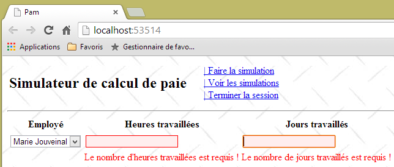
9.11.2. Inserimento di numeri reali nel formato francese
Nella versione attuale dell'applicazione, il numero di ore lavorate deve essere un numero decimale nel formato anglosassone (con il punto decimale). Il formato francese con la virgola non è accettato:
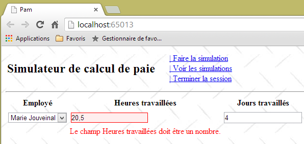
Questo problema è stato individuato e risolto nella Sezione 6.1.
Compito: seguendo la procedura descritta nella sezione sopra menzionata, apportare le modifiche necessarie affinché i numeri reali possano essere inseriti utilizzando il formato decimale francese. Testare l'applicazione.
Ora, la schermata precedente diventa:

9.11.3. Convalida del modulo tramite il link JavaScript [Esegui simulazione]
Attualmente è possibile inviare valori non validi, come mostrato nella seguente sequenza:
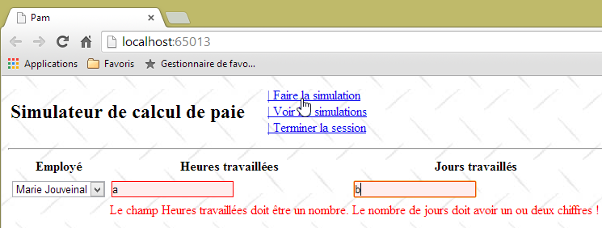
 |
La presenza della simulazione in [1] e il cambiamento del menu in [2] dimostrano che cliccando sul link [Esegui simulazione] il modulo è stato inviato anche se i valori inseriti non erano validi. Questo problema è stato identificato e risolto nella sezione 7.6.5.
Compito: seguendo la procedura descritta nella sezione sopra citata, assicurarsi che l'azione POST per il link [Esegui simulazione] non possa essere eseguita se i valori inseriti non sono validi. Ricordarsi di svuotare la cache del browser prima di testare le modifiche.
Si noti che la vista parziale [Formulaire.cshtml] genera un modulo HTML con l'id [formulaire] (riga 1 di seguito):
@using (Html.BeginForm("FaireSimulation", "Pam", FormMethod.Post, new { id = "formulaire" }))
{
...
}
È possibile verificarlo visualizzando il codice sorgente del modulo nel browser:
<div id="content">
<form action="/Pam/FaireSimulation" id="formulaire" method="post">
...
</form>
<div id="simulation" />
</div>
9.12. Passaggio 6: Eseguire una simulazione
9.12.1. Il problema
Quando eseguiamo una simulazione, vogliamo ottenere il seguente risultato:
 |
La vista parziale [Simulation.cshtml] ora mostra la busta paga di un dipendente.
9.12.2. Scrittura della vista [Simulation.cshtml]
La vista [Simulation.cshtml] cambia come segue:
@model Pam.Metier.Entites.FeuilleSalaire
<hr />
<p><span class="info">Informations Employé</span></p>
<table>
<tbody>
<tr>
<td><span class="libellé">Nom</span>
</td>
<td><span class="libellé">Prénom</span>
</td>
<td><span class="libellé">Adresse</span>
</td>
</tr>
<tr>
<td>
<span class="valeur">@Model.Employe.Nom</span>
</td>
...
</tr>
<tr>
<td><span class="libellé">Ville</span>
</td>
<td><span class="libellé">Code Postal</span>
</td>
<td><span class="libellé">Indice</span>
</td>
</tr>
<tr>
...
</tr>
</tbody>
</table>
<br />
<p><span class="info">Informations Cotisations</span></p>
<table>
...
</tbody>
</table>
<br />
<p><span class="info">Informations Indemnités</span></p>
<table>
...
</table>
<br />
<p><span class="info">Informations Salaire</span></p>
<table>
...
</table>
<br />
<table>
...
</table>
- riga 1: la vista [Simulation.cshtml] si basa sul tipo [PayrollSheet] definito nella sezione 9.7.3;
- la vista utilizza le classi [label, info, value] definite nel foglio di stile dell'applicazione [Content / Site.css]:
.libellé {
background-color: azure;
margin: 5px;
padding: 5px;
}
.info {
background-color: antiquewhite;
margin: 5px;
padding: 5px;
}
.valeur {
background-color: beige;
padding: 5px;
margin: 5px;
}
Inoltre, sempre in [Site.css], impostiamo l'altezza delle righe delle varie tabelle HTML nella regione con l'ID [simulation], in particolare dove viene visualizzata la busta paga:
#simulation table tr {
height: 30px;
}
Compito: Completa la vista [Simulation.cshtml].
Per visualizzare l'importo in euro di una somma di denaro, useremo il metodo [string.Format]:
L'istruzione sopra riportata visualizza [somme] come valore monetario [C] (Currency) con due cifre decimali [C2].
Per testare questa vista, è necessario fornirle una busta paga. Questa deve essere fornita dall'azione [/Pam/FaireSimulation], che è la destinazione della chiamata Ajax dal link [Esegui simulazione]. Attualmente, questa azione è la seguente:
[HttpGet]
public ViewResult Index(ApplicationModel application)
{
return View(new IndexModel() { Application = application });
}
// make a simulation
[HttpPost]
public PartialViewResult FaireSimulation()
{
return PartialView("Simulation");
}
Nel codice sopra riportato, l'azione [FaireSimulation] non passa alcun modello alla vista [Simulation.cshtml]. Deve passarle una busta paga. Sappiamo che il livello [business] calcola le buste paga. Questo livello [business] è accessibile tramite il modello dell'applicazione [ApplicationModel] che abbiamo definito nella sezione 9.10.2:
public class ApplicationModel
{
// --- application scope data ---
public Employe[] Employes { get; set; }
public IPamMetier PamMetier { get; set; }
public SelectListItem[] EmployesItems { get; set; }
}
Il livello [business] è accessibile tramite la proprietà alla riga 5 sopra. Per consentire all'azione [RunSimulation] di accedere al livello [business], le passeremo il modello dell'applicazione come abbiamo fatto per l'azione [Index]. Il codice si evolve quindi come segue:
// make a simulation
[HttpPost]
public PartialViewResult FaireSimulation(ApplicationModel application)
{
return PartialView("Simulation");
}
Ora, all'interno dell'azione, siamo in grado di calcolare una busta paga fittizia. Il codice si evolve come segue:
// make a simulation
[HttpPost]
public PartialViewResult FaireSimulation(ApplicationModel application)
{
FeuilleSalaire feuilleSalaire = application.PamMetier.GetSalaire("254104940426058", 150, 20);
return PartialView("Simulation", feuilleSalaire);
}
- Nella riga 5 viene calcolato uno stipendio fittizio. Il primo parametro è un numero di previdenza sociale esistente. È stato definito nella classe [business] simulata nella sezione 9.7.5. Il secondo parametro è il numero di ore lavorate e il terzo è il numero di giorni lavorati;
- Riga 6: questo cedolino viene passato come modello alla vista [Simulation.cshtml].
Ora siamo pronti per testare la vista [Simulation.cshtml]:

Non inseriamo alcun dato e richiediamo la simulazione. Otteniamo quindi il seguente risultato:
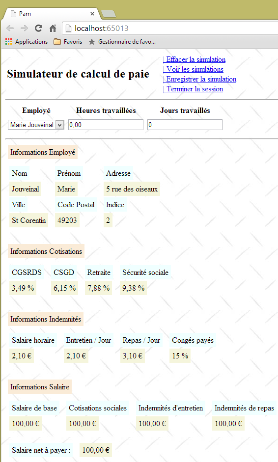
9.12.3. Calcolo della retribuzione effettiva
La nostra attuale azione [RunSimulation] calcola sempre la stessa busta paga:
// make a simulation
[HttpPost]
public PartialViewResult FaireSimulation(ApplicationModel application)
{
FeuilleSalaire feuilleSalaire = application.PamMetier.GetSalaire("254104940426058", 150, 20);
return PartialView("Simulation", feuilleSalaire);
}
Non tiene conto delle informazioni inserite:
- il dipendente di cui si sta calcolando lo stipendio;
- il numero di ore lavorate;
- il numero di giorni lavorati.
I valori inseriti vengono passati all'azione [RunSimulation] come segue:
- l'utente clicca sul link [Esegui simulazione]. Questo fa scattare l'esecuzione della funzione JS [runSimulation] che abbiamo già scritto;
- la funzione JS [faireSimulation] effettua quindi una chiamata Ajax all'azione server [/Pam/FaireSimulation] su cui stiamo attualmente lavorando. Per ora, la funzione JS [faireSimulation] non invia alcuna informazione all'azione server. Dovrà inviarle i valori inseriti dall'utente;
- l'azione server [/Pam/FaireSimulation] recupererà i valori inseriti dai dati inviati dalla funzione JS [faireSimulation].
Cominciamo dal punto 2: la funzione JS [faireSimulation] deve inviare i valori inseriti dall'utente all'azione server [/Pam/FaireSimulation].
Compito: completare la funzione JS [faireSimulation] in modo che invii i valori inseriti dall'utente. È possibile fare riferimento all'esempio nella sezione 7.6.5, dove è stata affrontata questa questione.
Ora affrontiamo il punto 3 sopra. L'azione server [/Pam/FaireSimulation] deve recuperare i valori inviati dalla funzione JS [faireSimulation].
Compito: completare il metodo server [FaireSimulation] in modo che calcoli lo stipendio utilizzando i valori inviati dalla funzione JS [faireSimulation]. È possibile fare nuovamente riferimento all'esempio nella Sezione 7.6.5, dove è stato affrontato questo problema. Per ora, supporremo che il modello derivato dai valori inviati sia sempre valido.
Suggerimento: L'azione server [FaireSimulation] si evolve come segue:
// make a simulation
[HttpPost]
public PartialViewResult FaireSimulation(ApplicationModel application, FormCollection data)
{
// action model creation
...
// we try to retrieve the values posted in this model
...
// salary calculation
FeuilleSalaire feuilleSalaire = ...
// the salary sheet is displayed
return PartialView("Simulation", feuilleSalaire);
}
Ecco un esempio di esecuzione:
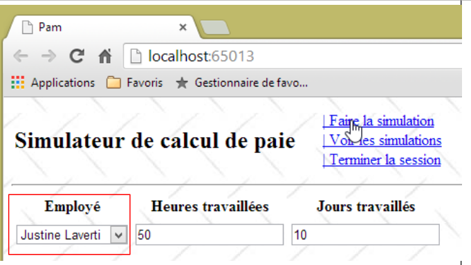 |
Selezioniamo [Justine Laverti]. Otteniamo quindi il seguente risultato:
 |
Abbiamo effettivamente ottenuto la busta paga fittizia per [Justine Laverti]. In precedenza, l'unica busta paga calcolata era quella di [Marie Jouveinal]. È stato quindi utilizzato il valore registrato per la selezione del dipendente. Per quanto riguarda il numero di ore e il numero di giorni, non possiamo dire nulla poiché il nostro livello [aziendale] simulato non li prende in considerazione.
9.12.4. Gestione degli errori
Diamo un'occhiata al seguente esempio:
 |
- in [1], selezioniamo un dipendente che non esiste (vedere la definizione del livello [aziendale] simulato nella sezione 9.7.5;
- in [2], eseguiamo la simulazione;
- in [3] qui sotto, viene restituita una pagina di errore.
 |
Cosa è successo?
È stata eseguita la funzione JS [doSimulation]. Il suo codice è il seguente:
function faireSimulation() {
...
// make a manual Ajax call
$.ajax({
url: '/Pam/FaireSimulation',
...
beforeSend: function () {
// wait signal on
loading.show();
},
success: function (data) {
...
},
error: function (jqXHR) {
// error display
simulation.html(jqXHR.responseText);
simulation.show();
},
complete: function () {
// wait signal off
loading.hide();
}
});
// menu
setMenu([lnkEffacerSimulation, lnkEnregistrerSimulation, lnkTerminerSession, lnkVoirSimulations]);
}
La chiamata Ajax non è andata a buon fine e sono state eseguite le funzioni alle righe 14–18. È stata visualizzata la pagina di errore [jqXHR.responseText] restituita dal server. Si tratta di un caso piuttosto specifico. Il livello [business] simulato ha generato un'eccezione perché il numero di previdenza sociale (SSN) fornito non appartiene a un dipendente esistente (vedere il codice del livello [business] simulato nella sezione 9.7.5). Dobbiamo gestire correttamente questo caso.
Creeremo una vista parziale [Errors.chtml] che verrà restituita al client JavaScript ogni volta che viene rilevato un errore sul lato server:
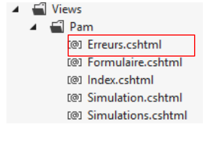 |
Il codice per la vista parziale [Errors.chtml] è il seguente:
@model IEnumerable<string>
<hr />
<h2>Les erreurs suivantes se sont produites</h2>
<ul>
@foreach (string msg in Model)
{
<li>@msg</li>
}
</ul>
- riga 1: la vista riceve un elenco di messaggi di errore come modello;
- righe 5–10: che vengono visualizzati in un elenco HTML;
Ora, modifichiamo il codice dell'azione server [FaireSimulation] come segue:
// make a simulation
[HttpPost]
public PartialViewResult FaireSimulation(ApplicationModel application, FormCollection data)
{
...
// salary calculation
FeuilleSalaire feuilleSalaire = null;
Exception exception=null;
try
{
// salary calculation
feuilleSalaire = ...
}
catch (Exception ex)
{
exception = ex;
}
// mistake?
if (exception == null)
{
// the salary sheet is displayed
return PartialView("Simulation", feuilleSalaire);
}
else
{
// the error page is displayed
return PartialView("Erreurs", Static.GetErreursForException(exception));
}
}
- righe 9–17: il calcolo dello stipendio viene ora eseguito all'interno di un blocco try/catch;
- riga 27: se si è verificato un errore, viene visualizzata la vista parziale [Errors.cshtml], utilizzando come modello l'elenco dei messaggi di errore fornito dal metodo statico [Static.GetErrorsForException(exception)].
Raggruppiamo due funzioni di utilità statiche [1] nella classe [Static]:
 |
using System;
using System.Collections.Generic;
using System.Web.Mvc;
namespace PamWeb.Infrastructure
{
public class Static
{
// list of exception error messages
public static List<string> GetErreursForException(Exception ex)
{
List<string> erreurs = new List<string>();
while (ex != null)
{
erreurs.Add(ex.Message);
ex = ex.InnerException;
}
return erreurs;
}
// list of error messages linked to an invalid model
public static List<string> GetErreursForModel(ModelStateDictionary état)
{
List<string> erreurs = new List<string>();
if (!état.IsValid)
{
foreach (ModelState modelState in état.Values)
{
foreach (ModelError error in modelState.Errors)
{
erreurs.Add(getErrorMessageFor(error));
}
}
}
return erreurs;
}
// the error message linked to an element of the action model
static private string getErrorMessageFor(ModelError error)
{
if (error.ErrorMessage != null && error.ErrorMessage.Trim() != string.Empty)
{
return error.ErrorMessage;
}
if (error.Exception != null && error.Exception.InnerException == null && error.Exception.Message != string.Empty)
{
return error.Exception.Message;
}
if (error.Exception != null && error.Exception.InnerException != null && error.Exception.InnerException.Message != string.Empty)
{
return error.Exception.InnerException.Message;
}
return string.Empty;
}
}
}
- righe 10–19: la funzione statica [GetErrorsForException] restituisce l'elenco degli errori in uno stack di eccezioni;
- righe 22–36: la funzione statica [GetErrorsForModel] restituisce l'elenco degli errori per un modello di azione non valido. Il codice di questa funzione, così come quello del metodo privato [getErrorMessageFor] (righe 39–54), è già stato visto in precedenza.
Fatto ciò, possiamo testare nuovamente il caso di errore:
 |
- in [1], selezioniamo il dipendente che non esiste;
- in [2], eseguiamo la simulazione;
- in [3], recuperiamo la nuova pagina di errore.
Torniamo all'azione del server [RunSimulation]:
// make a simulation
[HttpPost]
public PartialViewResult FaireSimulation(ApplicationModel application, FormCollection data)
{
// action model creation
IndexModel modèle = new IndexModel() { Application = application};
// we try to retrieve the values posted in the model
TryUpdateModel(modèle, data);
// salary calculation
...
}
Alla riga 8, aggiorniamo il modello della riga 6 con i valori inviati dalla chiamata Ajax. Non convalidiamo il modello. Dobbiamo procedere in questo modo perché non possiamo sapere da dove provengano i valori inviati. Qualcuno potrebbe aver manomesso una richiesta POST e averci inviato dati non validi.
Compito: seguendo lo schema che abbiamo sviluppato per il caso di eccezione, modificare l'azione del server [FaireSimulation] in modo che restituisca una pagina di errore quando i dati inviati non sono validi. Per farlo, useremo il metodo statico [GetErreursForModel] della classe [Static].
Come si verifica questa modifica? Nella Sezione 9.11.3, avete verificato che la funzione JS [faireSimulation] non inviasse i valori inseriti tramite POST se non erano validi. Commentate le righe che eseguono questa operazione, quindi eseguite il seguente test:
 |
- in [1], esegui la simulazione con valori non validi;
- in [2], recuperiamo con successo la pagina di errore che abbiamo appena creato, dimostrando che i validatori lato server hanno funzionato correttamente.
Successivamente, ricordati di rimuovere il commento dalle righe che hai appena commentato nella funzione JS [faireSimulation].
9.13. Passaggio 7: Configurazione di una sessione utente
L'applicazione [Calcolatore delle buste paga] consente all'utente di eseguire varie simulazioni delle buste paga utilizzando il link [Esegui simulazione], salvarle utilizzando il link [Salva simulazione], visualizzarle utilizzando il link [Visualizza simulazioni] ed eliminarle utilizzando il link [Elimina simulazione]. Sappiamo che tra due richieste successive dell'utente non esiste uno stato a meno che non ne creiamo uno tramite il meccanismo di sessione (vedi Sezione 4.10). È abbastanza chiaro qui che dobbiamo memorizzare nella sessione l'elenco delle simulazioni salvate dall'utente nel tempo. Ci sono altri dati da memorizzare: quando l'utente esegue una simulazione, questa viene salvata nell'elenco delle simulazioni solo se l'utente lo richiede tramite il link [Salva simulazione]. Quando lo fa, dobbiamo essere in grado di recuperare la simulazione calcolata nella richiesta precedente. Per farlo, anche questa verrà memorizzata nella sessione. Infine, numereremo le simulazioni a partire da 1. Per numerare correttamente una nuova simulazione, dobbiamo aver conservato il numero della simulazione precedente, sempre nella sessione.
Nella Sezione 4.10 abbiamo introdotto il concetto di modello di sessione come parametro di input per un'azione, in modo che l'azione possa accedere alla sessione. Torneremo su questo concetto. Ti invitiamo a rileggere la sezione pertinente se questo concetto non ti è chiaro.
Creiamo la seguente classe [SessionModel]:
 |
Il codice è il seguente:
using Pam.Web.Models;
using System.Collections.Generic;
namespace Pam.Web.Models
{
public class SessionModel
{
// list of simulations
public List<Simulation> Simulations { get; set; }
// n° of next simulation
public int NumNextSimulation { get; set; }
// the last simulation
public Simulation Simulation { get; set; }
// manufacturer
public SessionModel()
{
// empty simulation list
Simulations = new List<Simulation>();
// next simulation no
NumNextSimulation = 1;
}
}
}
La classe [Simulation] alle righe 9 e 13 memorizzerà le informazioni relative a una simulazione. Cosa dobbiamo memorizzare? Il collegamento [Esegui simulazione] calcola un foglio paga di tipo [Payroll]. Sembra naturale includerlo nella simulazione. Inoltre, dobbiamo memorizzare le informazioni che hanno portato a questo foglio paga:
- il dipendente selezionato. Questo si trova nel campo [PayrollSheet.Employee]. Pertanto, non è necessario memorizzarlo una seconda volta;
- il numero di ore e giorni lavorati. Queste informazioni non sono incluse nella classe [Payroll]. Dobbiamo quindi memorizzarle.
Infine, ogni simulazione è identificata da un numero. Potremmo quindi iniziare con la seguente classe [Simulation]:
using Pam.Metier.Entites;
namespace Pam.Web.Models
{
public class Simulation
{
// simulation no
public int Num { get; set; }
// number of hours worked
public double HeuresTravaillées { get; set; }
// number of days worked
public int JoursTravaillés { get; set; }
// payslip
public FeuilleSalaire FeuilleSalaire { get; set; }
}
}
L'azione server [RunSimulation] deve, oltre a calcolare un libro paga, creare una simulazione e inserirla nella sessione. A tal fine, riceverà il modello di sessione come parametro:
// make a simulation
[HttpPost]
public PartialViewResult FaireSimulation(ApplicationModel application, SessionModel session, FormCollection data)
{
// action model creation
IndexModel modèle = new IndexModel() { Application = application };
// we try to retrieve the values posted in the model
TryUpdateModel(modèle, data);
// valid model?
if (!ModelState.IsValid)
{
// the error page is displayed
return PartialView("Erreurs", Static.GetErreursForModel(ModelState));
}
// salary calculation
FeuilleSalaire feuilleSalaire = null;
Exception exception = null;
try
{
// salary calculation
feuilleSalaire = application.PamMetier.GetSalaire(modèle.SS, modèle.HeuresTravaillées, (int)modèle.JoursTravaillés);
}
catch (Exception ex)
{
exception = ex;
}
// mistake?
if (exception != null)
{
// the error page is displayed
return PartialView("Erreurs", Static.GetErreursForException(exception));
}
// create a simulation and place it in the session
session.Simulation = ...
// the salary sheet is displayed
return PartialView("Simulation", feuilleSalaire);
}
- riga 3: l'azione riceve il modello di sessione come parametro;
Compito 1: Completa il codice dell'azione, riga 34
Compito 2: seguendo la procedura descritta nella Sezione 4.10, fare il necessario per garantire che il parametro [SessionModel session] dell'azione sia correttamente inizializzato dal framework. Se non si interviene, questo parametro avrà un puntatore nullo.
9.14. Passaggio 8: salvare una simulazione
9.14.1. Il problema
Una volta eseguita una simulazione, è possibile salvarla:
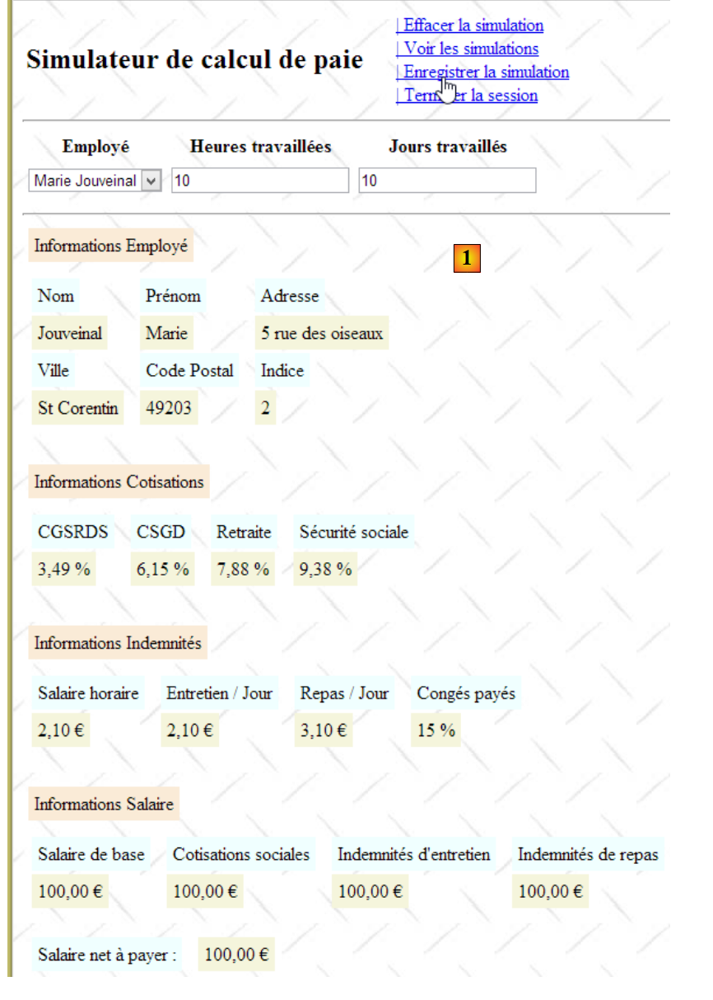 |

La vista parziale [Simulations.cshtml] ora mostra l'elenco delle simulazioni eseguite dall'utente. Si noti che la busta paga calcolata è fittizia.
9.14.2. Scrittura dell'azione server [SaveSimulation]
Il link Ajax [Salva simulazione] richiama l'azione server [SaveSimulation], il cui codice era in precedenza il seguente:
[HttpPost]
public PartialViewResult EnregistrerSimulation()
{
return PartialView("Simulations");
}
Si evolve come segue:
// save a simulation
[HttpPost]
public PartialViewResult EnregistrerSimulation(SessionModel session)
{
// save the last simulation run in the session's simulation list
...
// increment the number of the next simulation in the session
...
// the list of simulations is displayed
...
}
- Riga 1: L'azione [SaveSimulation] deve poter accedere alla sessione. Ecco perché accetta il modello della sessione come parametro.
Compito: completare l'azione server [SaveSimulation].
9.14.3. Scrittura della vista parziale [Simulations.cshtml]
L'azione precedente [SaveSimulation] visualizza la vista parziale [Simulations.cshtml] con l'elenco delle simulazioni eseguite dall'utente come modello. Il codice è il seguente:
@model IEnumerable<Simulation>
@using Pam.Web.Models
@if (Model.Count() == 0)
{
<h2>Votre liste de simulations est vide</h2>
}
@if (Model.Count() != 0)
{
<h2>Liste des simulations</h2>
...
}
Compito 1: Completa il codice per la vista parziale [Simulations.cshtml]. Utilizza una tabella HTML per visualizzare le simulazioni. Puoi fare riferimento agli esempi riportati nella Sezione 5.4.
Nota: Il link [remove] per ciascuna simulazione nella tabella HTML sarà un link JavaScript nel seguente formato:
dove N è il numero della simulazione.
Compito 2: Testa la tua applicazione eseguendo delle simulazioni. Per farlo, ripeti la seguente sequenza: 1) ricarica la pagina dell'applicazione premendo [F5], 2) esegui una simulazione, 3) salvala. Le simulazioni si accumuleranno nella sessione, il che dovrebbe riflettersi nella vista [Simulations.cshtml].
Compito 3: Migliora la vista parziale [Simulations.cshtml] in modo che i colori delle righe nella tabella HTML si alternino.
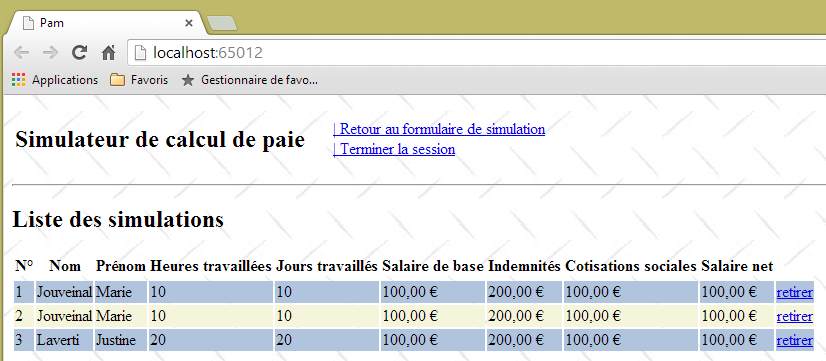
Assegna in modo alternato le classi CSS [even] e [odd], definite nel foglio di stile [/Content/Site.css], alle righe <tr> della tabella HTML:
.impair {
background-color: beige;
}
.pair {
background-color: lightsteelblue;
}
9.15. Passaggio 9: Torna al modulo di inserimento
9.15.1. Il problema
Una volta ottenuto l'elenco delle simulazioni, possiamo tornare al modulo di input, cosa che non siamo stati in grado di fare per un po':


9.15.2. Scrivere l'azione server [Form]
Il link Ajax [Torna al modulo di simulazione] chiama l'azione server [Form], il cui codice era in precedenza il seguente:
[HttpPost]
public PartialViewResult Formulaire()
{
return PartialView("Formulaire");
}
La vista parziale [Form] che visualizza richiede un [IndexModel] (riga 1 di seguito):
@model Pam.Web.Models.IndexModel
@using (Html.BeginForm("FaireSimulation", "Pam", FormMethod.Post, new { id = "formulaire" }))
{
...
}
<div id="simulation" />
Ecco perché il link [Torna al modulo di simulazione] non funzionava più.
Compito: scrivere la nuova versione dell'azione server [Form] (2 righe da riscrivere), quindi eseguire i test.
9.15.3. Modifica della funzione JavaScript [returnToForm]
Con la modifica apportata in precedenza, ora possiamo tornare al modulo, ma si presenta un problema:
 |
- In [1], torniamo al modulo di inserimento;
- in [2], eseguiamo una simulazione con dati errati. Scopriamo quindi che i validatori lato client non funzionano più. In questo caso, il server è stato chiamato e ha restituito una pagina di errore grazie al lavoro svolto nella sezione 9.12.4.
Questo problema è stato identificato e risolto nella Sezione 7.6.7.
Compito: seguendo la procedura descritta nella Sezione 7.6.7, correggere la funzione JavaScript [returnToForm] e quindi eseguire dei test per verificare che i validatori lato client funzionino nuovamente.
9.16. Passaggio 10: Visualizza l'elenco delle simulazioni
9.16.1. Il problema
Quando si lavora con il modulo di simulazione, è possibile visualizzare l'elenco delle simulazioni eseguite:


9.16.2. Scrittura dell'azione server [ViewSimulations]
Il link Ajax [Visualizza simulazioni] richiama l'azione server [ViewSimulations], il cui codice era in precedenza il seguente:
// see simulations
[HttpPost]
public PartialViewResult VoirSimulations()
{
return PartialView("Simulations");
}
La vista parziale [Simulations] che visualizza richiede un modello [IEnumerable<Simulation>] (riga 1 di seguito):
@model IEnumerable<Simulation>
@using Pam.Web.Models
@if (Model.Count() == 0)
{
<h2>Votre liste de simulations est vide</h2>
}
@if (Model.Count() != 0)
{
<h2>Liste des simulations</h2>
...
}
Ecco perché il link [Visualizza simulazioni] non funzionava più.
Compito: scrivere la nuova versione dell'azione server [ViewSimulations] (2 righe da riscrivere), quindi eseguire i test.
9.17. Passaggio 11: Terminare la sessione
9.17.1. Il problema
È possibile terminare la sessione dell'utente in qualsiasi momento utilizzando il link [Ajax] [Termina sessione]. Questo termina la sessione corrente e ne avvia una nuova. Inoltre, si ritorna alla vista del modulo:
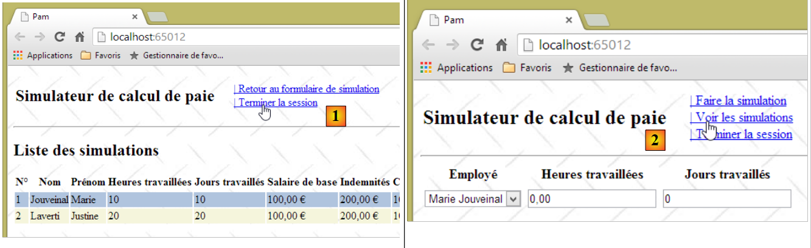 |
 |
- in [1], abbiamo eseguito due simulazioni e poi abbiamo terminato la sessione;
- in [2], siamo tornati al modulo di input. Vogliamo vedere le simulazioni;
- in [3], a causa del cambio di sessione, l'elenco delle simulazioni è ora vuoto.
9.17.2. Scrittura dell'azione server [EndSession]
Il link Ajax [End Session] chiama l'azione server [EndSession], il cui codice era in precedenza il seguente:
// end session
[HttpPost]
public PartialViewResult TerminerSession()
{
return PartialView("Formulaire");
}
La vista parziale [Form] che visualizza richiede un [IndexModel] (riga 1 di seguito):
@model Pam.Web.Models.IndexModel
@using (Html.BeginForm("FaireSimulation", "Pam", FormMethod.Post, new { id = "formulaire" }))
{
...
}
<div id="simulation" />
Ecco perché il link [Fine sessione] non funzionava più.
Compito: Scrivere la nuova versione dell'azione server [EndSession] (2 righe da riscrivere), quindi eseguire i test.
Nota: per terminare la sessione nell'azione, scrivi:
9.17.3. Modifica della funzione JavaScript [terminerSession]
Con la modifica apportata in precedenza, ora possiamo tornare al modulo, ma si verifica un'anomalia, quella descritta in precedenza nella sezione 9.15.3.
Compito: seguendo la procedura utilizzata nella sezione 9.15.3, correggere la funzione JavaScript [terminerSession] e quindi eseguire dei test per verificare che i validatori lato client funzionino nuovamente.
9.18. Passaggio 12: Cancellare la simulazione
9.18.1. Il problema
Una volta creata una simulazione, è possibile cancellarla utilizzando il link JavaScript [Clear Simulation]:


9.18.2. Scrivere l'azione lato client [clearSimulation]
La funzione JavaScript [clearSimulation] attualmente presenta il seguente codice:
function effacerSimulation() {
// delete form entries
// ...
// hide the simulation if it exists
$("#simulation").hide();
// menu
setMenu([lnkFaireSimulation, lnkTerminerSession, lnkVoirSimulations]);
}
Compito: Completa questo codice. Puoi usare l'esempio nella sezione 7.6.6 come guida
9.19. Passaggio 13: Rimuovere una simulazione
9.19.1. Il problema
Nella pagina delle simulazioni, è possibile eliminare alcune simulazioni utilizzando il link JavaScript [remove]:


9.19.2. Scrittura dell'azione client [removeSimulation]
I link [remove] hanno il seguente formato HTML:
dove N è il numero della simulazione.
Compito: seguendo la procedura descritta nelle sezioni 9.9.3, scrivi la funzione JS [removeSimulation]. Questa funzione invierà una richiesta Ajax di tipo POST all'azione [/Pam/RemoveSimulation]. Invierà il dato N nel formato num=N.
Nota: La funzione JS [retirerSimulation] è simile alle altre funzioni JS che hai scritto e che effettuano una chiamata Ajax al server. L'unica differenza in questo caso è l'invio POST di un valore che non si trova in un modulo. Sappiamo che i valori inviati vengono combinati in una stringa nel seguente formato:
La funzione JS [removeSimulation] avrà quindi la seguente forma:
function retirerSimulation(N) {
// make a manual Ajax call
$.ajax({
url: '/Pam/RetirerSimulation',
...
data:"num="+N,
...
});
// menu
setMenu([lnkRetourFormulaire, lnkTerminerSession]);
}
- Riga 6: La proprietà [data] di una chiamata jQuery Ajax rappresenta la stringa inviata al server.
9.19.3. Scrittura dell'azione server [RemoveSimulation]
L'azione server [RemoveSimulation]:
- riceve un parametro inviato chiamato [num], che è il numero di una simulazione;
- deve rimuovere la simulazione con quel numero dall'elenco delle simulazioni memorizzate nella sessione;
- deve quindi visualizzare il nuovo elenco di simulazioni.
Compito: Scrivere l'azione server [RemoveSimulation]. Rivedere la Sezione 4.1 per imparare come recuperare il parametro inviato denominato [num].
9.20. Passaggio 14: Miglioramento del metodo di inizializzazione dell'applicazione
La nostra applicazione web è completa. È funzionante con una classe [business] simulata. Rivediamo l'architettura che abbiamo sviluppato:
 |
Ci sono alcuni dettagli da sistemare prima di passare all'effettiva implementazione del livello [business], e questo avviene nel metodo di inizializzazione dell'applicazione: il metodo [Application_Start] in [Global.asax]:
 |
Il metodo [Application_Start] in [Global.asax] viene eseguito una sola volta all'avvio dell'applicazione. È qui che è possibile utilizzare il file di configurazione [Web.config]. Per ora, il nostro metodo [Application_Start] si presenta così:
// application
protected void Application_Start()
{
// ----------Auto-generated
AreaRegistration.RegisterAllAreas();
WebApiConfig.Register(GlobalConfiguration.Configuration);
FilterConfig.RegisterGlobalFilters(GlobalFilters.Filters);
RouteConfig.RegisterRoutes(RouteTable.Routes);
BundleConfig.RegisterBundles(BundleTable.Bundles);
// -------------------------------------------------------------------
// ---------- specific configuration
// -------------------------------------------------------------------
// application scope data
ApplicationModel application = new ApplicationModel();
Application["data"] = application;
// instantiation layer [business]
application.PamMetier = new PamMetier();
...
// model binders
...
}
Alla riga 17, il livello di business viene istanziato utilizzando l'operatore new. Inoltre, il modello dell'applicazione è definito come segue:
public class ApplicationModel
{
// --- application scope data ---
public Employe[] Employes { get; set; }
public IPamMetier PamMetier { get; set; }
public SelectListItem[] EmployesItems { get; set; }
}
Nella riga 5 sopra, vediamo che il tipo della proprietà [PamMetier] è quello dell'interfaccia [IPamMetier]. Ciò significa che questa proprietà può essere inizializzata da qualsiasi oggetto che implementi questa interfaccia. Tuttavia, alla riga 17 di [Application_Start], abbiamo hard-coded il nome di una classe che implementa [IPamMetier]. Pertanto, se il livello [business] dovesse essere implementato con una nuova classe che implementa [IPamMetier], questa riga dovrebbe essere modificata. Non si tratta di un problema grave, ma può essere evitato. La definizione della classe che implementa l'interfaccia [IPamMetier] può essere spostata in un file di configurazione. Per modificare l'implementazione, basta quindi modificare il contenuto di questo file di configurazione. Il codice .NET non deve essere modificato.
Qui useremo il contenitore di iniezione delle dipendenze [Spring.net]. Esistono altri framework .NET in grado di fare la stessa cosa, forse in modo migliore e più semplice.
L'architettura del progetto si evolve come segue:
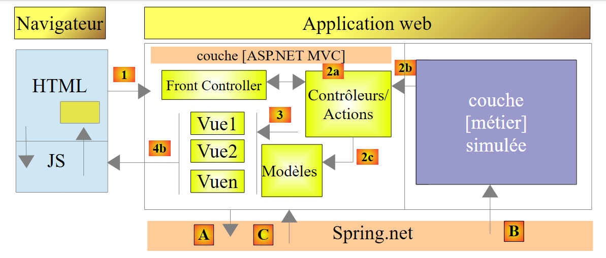 |
- in [A], il metodo di inizializzazione del livello [ASP.NET MVC] richiederà a [Spring.net] un riferimento al livello [business] simulato;
- in [B], [Spring.net] creerà il livello [business] simulato utilizzando il proprio file di configurazione per determinare quale classe istanziare;
- in [C], [Spring.net] restituirà il riferimento al livello [business] simulato al livello [ASP.NET MVC].
Si noti che, per impostazione predefinita, gli oggetti gestiti da [Spring.net] sono singleton: esiste una sola istanza di ciascuno. Pertanto, se più avanti nel nostro esempio il codice richiede nuovamente a [Spring.net] un riferimento al livello [business] simulato, [Spring.net] restituirà semplicemente il riferimento all'oggetto creato inizialmente.
9.20.1. Aggiunta di riferimenti [Spring] al progetto web
Useremo [Spring.net]. Questo framework si presenta sotto forma di una DLL che deve essere aggiunta ai riferimenti del progetto. Ecco come procedere:
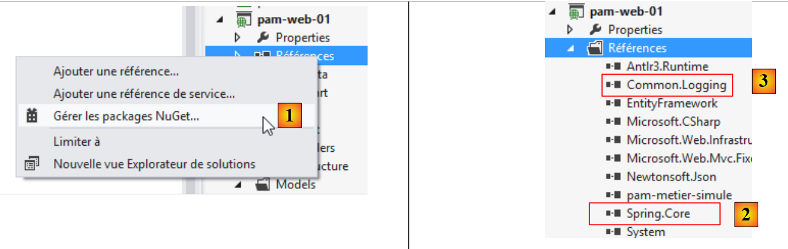 |
In [1], fare clic con il tasto destro del mouse sul ramo [Riferimenti] del progetto e selezionare l'opzione [Gestisci pacchetti NuGet]. È necessaria una connessione a Internet. Procedere quindi come fatto in precedenza per la libreria JQuery [Globalize]. Cercare la parola chiave [Spring.core] e installare questo pacchetto. L'installazione include due DLL: [Spring.core] [2] e [Common.Logging] [3]. Negli esempi seguenti è stata utilizzata la versione 1.3.2 di Spring.
Nota: se non disponi di una connessione a Internet, troverai questi file DLL nella cartella [lib] contenente il materiale relativo a questo caso di studio.
9.20.2. Configurazione di [web.config]
La definizione della classe di implementazione per l'interfaccia [IPamMetier] è definita nel file [web.config].
<configuration>
<configSections>
...
<sectionGroup name="spring">
<section name="objects" type="Spring.Context.Support.DefaultSectionHandler, Spring.Core" />
<section name="context" type="Spring.Context.Support.ContextHandler, Spring.Core" />
</sectionGroup>
</configSections>
<!-- spring configuration -->
<spring>
<context>
<resource uri="config://spring/objects" />
</context>
<objects xmlns="http://www.springframework.net">
<object id="pammetier" type="Pam.Metier.Service.PamMetier, pam-metier-simule"/>
</objects>
</spring>
...
- righe 2–8: individuare il tag <configSections> nel file e inserire le righe 4–7 al suo interno;
- riga 4: l'attributo [name="spring"] fornisce informazioni sulla sezione [spring] nelle righe 10-17;
- riga 5: definisce la classe [Spring.Context.Support.DefaultSectionHandler] situata nella DLL [Spring.Core] come quella in grado di gestire la sezione [objects] nelle righe 14–16;
- riga 6: definisce la classe [Spring.Context.Support.ContextHandler], presente nella DLL [Spring.Core], come quella in grado di elaborare la sezione [context] alle righe 11–13;
- righe 11–13: questa sezione fornisce l'informazione [<resource uri="config://spring/objects" />], che indica che gli oggetti Spring si trovano nel file di configurazione all'interno della sezione [/spring/objects], ovvero alle righe 14–16;
- righe 14–16: il tag [objects] introduce gli oggetti Spring;
- riga 15: definisce un oggetto identificato da [id="pammetier"], che è un'istanza della classe [Pam.Metier.Service.PamMetier] situata nella DLL [pam-metier-simule]. Fai attenzione a non commettere errori in questa fase. Per l'attributo [id] puoi utilizzare qualsiasi valore desideri. Utilizzerai questo identificatore in [Global.asax]. La classe [Pam.Metier.Service.PamMetier] è quella del nostro livello [business] simulato. Devi tornare alla sua definizione per trovare il nome completo:
namespace Pam.Metier.Service
{
public class PamMetier : IPamMetier
{
...
Per la DLL [pam-metier-simule], è necessario verificare le proprietà del progetto C# [pam-metier-simule]:
 |
È necessario utilizzare il nome indicato in [1].
9.20.3. Modifica di [Application_Start]
Il metodo [Application_Start] cambia come segue:
using Spring.Context.Support;
// application
protected void Application_Start()
{
// ----------Auto-generated
AreaRegistration.RegisterAllAreas();
WebApiConfig.Register(GlobalConfiguration.Configuration);
FilterConfig.RegisterGlobalFilters(GlobalFilters.Filters);
RouteConfig.RegisterRoutes(RouteTable.Routes);
BundleConfig.RegisterBundles(BundleTable.Bundles);
// -------------------------------------------------------------------
// ---------- specific configuration
// -------------------------------------------------------------------
// application scope data
ApplicationModel application = new ApplicationModel();
Application["data"] = application;
// instantiation layer [business]
application.PamMetier = ContextRegistry.GetContext().GetObject("pammetier") as IPamMetier;
...
// model binders
...
}
- Riga 19: Utilizziamo la classe Spring [ContextRegistry], in grado di elaborare il file [web.config]. Per farlo, dobbiamo importare lo spazio dei nomi dalla riga 1. Il metodo statico [GetContext] recupera il contenuto dei tag [context], che indicano dove si trovano gli oggetti Spring. Il metodo statico [GetObject] ci permette quindi di recuperare un oggetto specifico identificato dal suo attributo id. Si noti che il nome della classe che implementa l'interfaccia [IPamMetier] non è più hardcoded nel codice. Ora si trova nel file [web.config].
Dopo aver apportato tutte queste modifiche, provate la vostra applicazione. Dovrebbe funzionare.
9.20.4. Gestione di un errore di inizializzazione dell'applicazione
Nel metodo [Application_Start] abbiamo scritto:
application.PamMetier = ContextRegistry.GetContext().GetObject("pammetier") as IPamMetier;
L'istruzione a destra del segno = potrebbe non andare a buon fine. Ci sono vari motivi per questo:
- la più ovvia è che abbiamo commesso un errore nel nome dell'oggetto da istanziare;
- un'altra è che l'istanziazione del livello [business] fallisca. Questo non può verificarsi per il nostro livello [business] simulato, ma potrebbe verificarsi per il nostro livello [business] reale, che sarà collegato a un database. Il DBMS potrebbe non essere in esecuzione, le informazioni sul database da gestire potrebbero essere errate, ecc...
Gestiremo eventuali eccezioni in un blocco try/catch. Il codice si evolve come segue:
// application
protected void Application_Start()
{
// ----------Auto-generated
...
// -------------------------------------------------------------------
// ---------- specific configuration
// -------------------------------------------------------------------
// application scope data
ApplicationModel application = new ApplicationModel();
Application["data"] = application;
application.InitException = null;
try
{
// instantiation layer [business]
application.PamMetier = ContextRegistry.GetContext().GetObject("pammetier") as IPamMetier;
}
catch (Exception ex)
{
application.InitException = ex;
}
//if no error
if (application.InitException == null)
{
....
}
// model binders
...
}
- Alla riga 12, introduciamo una nuova proprietà denominata [InitException] nel modello dell'applicazione:
public class ApplicationModel
{
// --- application scope data ---
public Employe[] Employes { get; set; }
public IPamMetier PamMetier { get; set; }
public SelectListItem[] EmployesItems { get; set; }
public Exception InitException { get; set; }
}
- riga 7 sopra, l'eccezione che può verificarsi durante l'inizializzazione dell'applicazione;
- righe 13–21 di [Application_Start]: l'istanziazione del livello [business] avviene ora all'interno di un blocco try/catch;
- riga 20: l'eccezione viene intercettata;
- righe 23–26: se non si è verificato alcun errore, viene eseguito il codice precedente;
- riga 28: i [ModelBinders] vengono creati indipendentemente dal fatto che si sia verificato o meno un errore. Questo è importante. Vogliamo assicurarci che il modello dell'applicazione [ApplicationModel] sia correttamente associato dal framework.
Sappiamo che all'avvio dell'applicazione viene eseguita l'azione server [Index]. Per ora, è la seguente:
[HttpGet]
public ViewResult Index(ApplicationModel application)
{
return View(new IndexModel() { Application = application });
}
Riga 2: L'azione [Index] riceve il modello dell'applicazione. Può quindi determinare se l'inizializzazione ha avuto esito positivo o meno e visualizzare una pagina di errore se l'inizializzazione ha fallito in qualche modo. Modifichiamo il codice come segue:
[HttpGet]
public ViewResult Index(ApplicationModel application)
{
// initialization error?
if (application.InitException != null)
{
// error page without menu
return View("InitFailed",Static.GetErreursForException(application.InitException));
}
// no error
return View(new IndexModel() { Application = application });
}
Riga 8: In caso di errore di inizializzazione, visualizziamo la vista [InitFailed.cshtml], utilizzando come modello l'elenco dei messaggi di errore dell'eccezione verificatasi durante l'inizializzazione. Il metodo [Static.GetErrorsForException] è stato introdotto e spiegato nella Sezione 9.12.4. La vista [InitFailed.cshtml] sarà la seguente:
 |
Il codice è il seguente:
@model IEnumerable<string>
@{
Layout = null;
}
<!DOCTYPE html>
<html>
<head>
<title>@ViewBag.Title</title>
<meta charset="utf-8" />
<meta name="viewport" content="width=device-width" />
<link rel="stylesheet" href="~/Content/Site.css" />
</head>
<body>
<table>
<tbody>
<tr>
<td>
<h2>Simulateur de calcul de paie</h2>
</td>
</tbody>
</table>
<hr />
<h2>Les erreurs suivantes se sont produites à l'initialisation de l'application : </h2>
<ul>
@foreach (string msg in Model)
{
<li>@msg</li>
}
</ul>
</body>
</html>
- riga 1: il modello di visualizzazione è un elenco di messaggi di errore. Questi vengono visualizzati in un elenco HTML alle righe 24–29;
- riga 3: questa vista non utilizza la pagina master [_Layout.cshtml]. Questo perché non vogliamo il menu fornito da quel documento. Creiamo quindi una pagina HTML completa (righe 5–23).
Per testarlo, è sufficiente modificare l'istanziazione del livello [business] in [Application_Start] come segue:
try
{
// instantiation layer [business]
application.PamMetier = ContextRegistry.GetContext().GetObject("xx") as IPamMetier;
}
catch (Exception ex)
{
application.InitException = ex;
}
Riga 4: Stiamo cercando un oggetto che non esiste tra gli oggetti Spring.
Quando salviamo queste modifiche ed eseguiamo l'applicazione, otteniamo la seguente pagina:
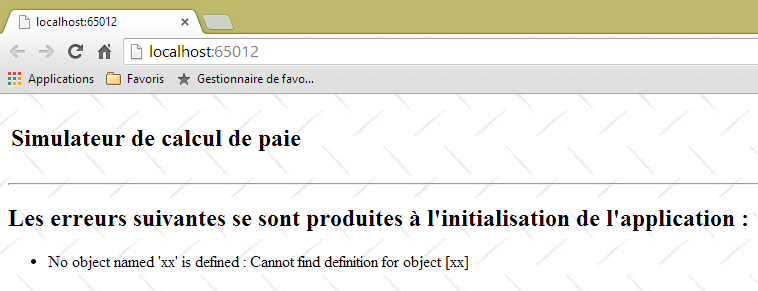
Otteniamo una pagina di errore senza menu. L'utente non può fare altro che prendere atto dell'errore. Questo è proprio ciò che volevamo.
9.21. A che punto siamo ora?
Ora disponiamo di un'applicazione web funzionante che opera con un livello aziendale simulato. La sua architettura è la seguente:
 |
Il livello [ASP.NET MVC] interagisce con il livello business simulato tramite l'interfaccia [IPamMetier]. Se sostituiamo questo livello business simulato con un livello business reale che implementa questa interfaccia, non dovremo modificare il codice del livello web. Grazie a [Spring.net], dovremo semplicemente cambiare la classe di implementazione dell'interfaccia [IPamMetier] in [web.config]. Procediamo con questo approccio.
La nuova architettura sarà la seguente:
 |
Descriveremo di seguito, in ordine:
- il livello [EF5] collegato al DBMS. Sarà implementato utilizzando Entity Framework 5 (EF5);
- il livello [DAO], che gestisce l'accesso ai dati tramite il livello [EF5]. Ciò gli consente di non essere a conoscenza del DBMS. Questo livello si limita a manipolare le entità dell'applicazione [Employee, Contributions, Allowances];
- il livello [business] che implementa il calcolo dello stipendio.
La nuova architettura è quella presentata all'inizio di questo documento nella sezione 1.1, che ora riassumiamo:
 |
- il livello [Web] è il livello a contatto con l'utente dell'applicazione web. L'utente interagisce con l'applicazione web attraverso pagine web visualizzate in un browser. ASP.NET MVC risiede in questo livello e solo in questo livello;
- il livello [business] implementa le regole di business dell'applicazione, come il calcolo di uno stipendio o di una fattura. Questo livello utilizza i dati provenienti dall'utente tramite il livello [Web] e dal DBMS tramite il livello [DAO];
- Il livello [DAO] (Data Access Objects), il livello [ORM] (Object Relational Mapper) e il connettore ADO.NET gestiscono l'accesso ai dati del DBMS. Il livello [ORM] funge da ponte tra gli oggetti gestiti dal livello [DAO] e le righe e le colonne di dati in un database relazionale. Nel mondo .NET vengono comunemente utilizzati due ORM: NHibernate (http://sourceforge.net/projects/nhibernate/) ed Entity Framework (http://msdn.microsoft.com/en-us/data/ef.aspx);
- L'integrazione dei livelli può essere ottenuta utilizzando un contenitore di iniezione delle dipendenze come Spring (http://www.springframework.net/);
I livelli [business], [DAO] ed [EF5] saranno implementati utilizzando progetti C#. D'ora in poi, lavoreremo con Visual Studio Express 2012 per Desktop.
9.22. Passaggio 15: Configurazione del livello Entity Framework 5
 |
La creazione del livello [EF5] riguarda meno la codifica e più la configurazione. Per comprendere come scrivere questo livello, leggere il documento [Introduzione a Entity Framework 5 Code First] disponibile all'URL [http://tahe.developpez.com/dotnet/ef5cf-02/]. Si tratta di un documento piuttosto lungo. I fondamenti sono trattati nei primi quattro capitoli. Verranno indicate le sezioni specifiche da leggere. Quando faremo riferimento a questo documento, useremo la notazione [refEF5].
Inoltre, in alcuni casi avremo bisogno di alcuni concetti relativi a C#. In tali occasioni faremo riferimento al corso [Introduzione al linguaggio C#], disponibile all'indirizzo [http://tahe.developpez.com/dotnet/csharp/], utilizzando la notazione [refC#].
9.22.1. Il database
Il database dell'applicazione è stato presentato nella Sezione 9.4. Si tratta di un database MySQL denominato [dbpam_ef5] (pam = Paie Assistante Maternelle). Questo database ha un amministratore denominato root senza password.
Rivediamo lo schema del database. Esso contiene tre tabelle:
Esiste una relazione di chiave esterna tra la colonna EMPLOYEES(INDEMNITY_ID) e la colonna INDEMNITIES(ID). Parte della struttura di questo database è dettata dal suo utilizzo con EF5.
Lo script SQL per la creazione del database è il seguente:
-- phpMyAdmin SQL Dump
-- version 3.5.1
-- http://www.phpmyadmin.net
--
-- Customer: localhost
-- Generated on: Mon November 04, 2013 at 09:34 am
-- Server version: 5.5.24-log
-- Version of PHP: 5.4.3
SET SQL_MODE="NO_AUTO_VALUE_ON_ZERO";
SET time_zone = "+00:00";
/*!40101 SET @OLD_CHARACTER_SET_CLIENT=@@CHARACTER_SET_CLIENT */;
/*!40101 SET @OLD_CHARACTER_SET_RESULTS=@@CHARACTER_SET_RESULTS */;
/*!40101 SET @OLD_COLLATION_CONNECTION=@@COLLATION_CONNECTION */;
/*!40101 SET NAMES utf8 */;
--
-- Database: `dbpam_ef5`
--
-- --------------------------------------------------------
--
-- Structure of the `contributions` table
--
CREATE TABLE IF NOT EXISTS `cotisations` (
`ID` bigint(20) NOT NULL AUTO_INCREMENT,
`SECU` double NOT NULL,
`RETRAITE` double NOT NULL,
`CSGD` double NOT NULL,
`CSGRDS` double NOT NULL,
`VERSIONING` int(11) NOT NULL,
PRIMARY KEY (`ID`)
) ENGINE=InnoDB DEFAULT CHARSET=utf8 AUTO_INCREMENT=12 ;
--
-- Contents of the `contributions` table
--
INSERT INTO `cotisations` (`ID`, `SECU`, `RETRAITE`, `CSGD`, `CSGRDS`, `VERSIONING`) VALUES
(11, 9.39, 7.88, 6.15, 3.49, 1);
--
-- Contribution triggers
--
DROP TRIGGER IF EXISTS `INCR_VERSIONING_COTISATIONS`;
DELIMITER //
CREATE TRIGGER `INCR_VERSIONING_COTISATIONS` BEFORE UPDATE ON `cotisations`
FOR EACH ROW BEGIN
SET NEW.VERSIONING:=OLD.VERSIONING+1;
END
//
DELIMITER ;
DROP TRIGGER IF EXISTS `START_VERSIONING_COTISATIONS`;
DELIMITER //
CREATE TRIGGER `START_VERSIONING_COTISATIONS` BEFORE INSERT ON `cotisations`
FOR EACH ROW BEGIN
SET NEW.VERSIONING:=1;
END
//
DELIMITER ;
-- --------------------------------------------------------
--
-- Structure of the `employees` table
--
CREATE TABLE IF NOT EXISTS `employes` (
`ID` bigint(20) NOT NULL AUTO_INCREMENT,
`PRENOM` varchar(20) CHARACTER SET latin1 NOT NULL,
`SS` varchar(15) CHARACTER SET latin1 NOT NULL,
`ADRESSE` varchar(50) CHARACTER SET latin1 NOT NULL,
`CP` varchar(5) CHARACTER SET latin1 NOT NULL,
`VILLE` varchar(30) CHARACTER SET latin1 NOT NULL,
`NOM` varchar(30) CHARACTER SET latin1 NOT NULL,
`VERSIONING` int(11) NOT NULL,
`INDEMNITE_ID` bigint(20) NOT NULL,
PRIMARY KEY (`ID`),
UNIQUE KEY `SS` (`SS`),
KEY `FK_EMPLOYES_INDEMNITE_ID` (`INDEMNITE_ID`)
) ENGINE=InnoDB DEFAULT CHARSET=utf8 AUTO_INCREMENT=26 ;
--
-- Contents of the `employees` table
--
INSERT INTO `employes` (`ID`, `PRENOM`, `SS`, `ADRESSE`, `CP`, `VILLE`, `NOM`, `VERSIONING`, `INDEMNITE_ID`) VALUES
(24, 'Marie', '254104940426058', '5 rue des oiseaux', '49203', 'St Corentin', 'Jouveinal', 1, 93),
(25, 'Justine', '260124402111742', 'La Brûlerie', '49014', 'St Marcel', 'Laverti', 1, 94);
--
-- Used' triggers
--
DROP TRIGGER IF EXISTS `INCR_VERSIONING_EMPLOYES`;
DELIMITER //
CREATE TRIGGER `INCR_VERSIONING_EMPLOYES` BEFORE UPDATE ON `employes`
FOR EACH ROW BEGIN
SET NEW.VERSIONING:=OLD.VERSIONING+1;
END
//
DELIMITER ;
DROP TRIGGER IF EXISTS `START_VERSIONING_EMPLOYES`;
DELIMITER //
CREATE TRIGGER `START_VERSIONING_EMPLOYES` BEFORE INSERT ON `employes`
FOR EACH ROW BEGIN
SET NEW.VERSIONING:=1;
END
//
DELIMITER ;
-- --------------------------------------------------------
--
-- Structure of the `indemnities` table
--
CREATE TABLE IF NOT EXISTS `indemnites` (
`ID` bigint(20) NOT NULL AUTO_INCREMENT,
`ENTRETIEN_JOUR` double NOT NULL,
`REPAS_JOUR` double NOT NULL,
`INDICE` int(11) NOT NULL,
`INDEMNITES_CP` double NOT NULL,
`BASE_HEURE` double NOT NULL,
`VERSIONING` int(11) NOT NULL,
PRIMARY KEY (`ID`),
UNIQUE KEY `INDICE` (`INDICE`)
) ENGINE=InnoDB DEFAULT CHARSET=utf8 AUTO_INCREMENT=95 ;
--
-- Contents of the `indemnities` table
--
INSERT INTO `indemnites` (`ID`, `ENTRETIEN_JOUR`, `REPAS_JOUR`, `INDICE`, `INDEMNITES_CP`, `BASE_HEURE`, `VERSIONING`) VALUES
(93, 2.1, 3.1, 2, 15, 2.1, 1),
(94, 2, 3, 1, 12, 1.93, 1);
--
-- Compensation triggers
--
DROP TRIGGER IF EXISTS `INCR_VERSIONING_INDEMNITES`;
DELIMITER //
CREATE TRIGGER `INCR_VERSIONING_INDEMNITES` BEFORE UPDATE ON `indemnites`
FOR EACH ROW BEGIN
SET NEW.VERSIONING:=OLD.VERSIONING+1;
END
//
DELIMITER ;
DROP TRIGGER IF EXISTS `START_VERSIONING_INDEMNITES`;
DELIMITER //
CREATE TRIGGER `START_VERSIONING_INDEMNITES` BEFORE INSERT ON `indemnites`
FOR EACH ROW BEGIN
SET NEW.VERSIONING:=1;
END
//
DELIMITER ;
--
-- Constraints for exported tables
--
--
-- Constraints for the `employees` table
--
ALTER TABLE `employes`
ADD CONSTRAINT `FK_EMPLOYES_INDEMNITE_ID` FOREIGN KEY (`INDEMNITE_ID`) REFERENCES `indemnites` (`ID`);
/*!40101 SET CHARACTER_SET_CLIENT=@OLD_CHARACTER_SET_CLIENT */;
/*!40101 SET CHARACTER_SET_RESULTS=@OLD_CHARACTER_SET_RESULTS */;
/*!40101 SET COLLATION_CONNECTION=@OLD_COLLATION_CONNECTION */;
Si prega di notare i seguenti punti:
- righe 30, 73, 122: le chiavi primarie delle tabelle sono in modalità [AUTO_INCREMENT]. Queste sono gestite da MySQL, non da EF5;
- riga 83: il numero SS ha un vincolo di unicità;
- riga 130: l'ID dipendente ha un vincolo di unicità;
- righe 168–169: la chiave esterna dalla tabella [employees] alla tabella [benefits];
- riga 49: un trigger è uno script SQL incorporato dal DBMS che viene eseguito in momenti specifici;
- righe 51–54: il trigger [INCR_VERSIONING_COTISATIONS] si attiva prima di qualsiasi modifica di una riga nella tabella [cotisations]. Incrementa quindi di uno la colonna [VERSIONING];
- Righe 59–62: il trigger [START_VERSIONING_COTISATIONS] si attiva prima che venga inserita qualsiasi nuova riga nella tabella [cotisations]. Quindi inizializza la colonna [VERSIONING] a 1;
- In definitiva, la colonna [VERSIONING] viene impostata su 1 quando viene creata una riga nella tabella [contributions] e viene poi incrementata di 1 ogni volta che viene apportata una modifica a quella riga. Questo meccanismo consente a EF5 di gestire l'accesso simultaneo a una riga nella tabella [contributions] come segue:
- Un processo P1 legge una riga L dalla tabella [contributions] al tempo T1. La riga ha un valore della colonna [VERSIONING] pari a V1;
- un processo P2 legge la stessa riga L dalla tabella [contributions] al momento T2. La riga ha un valore della colonna [VERSIONING] pari a V1 perché il processo P1 non ha ancora confermato la sua modifica;
- Il processo P1 modifica la riga L e conferma la modifica. La colonna [VERSIONING] della riga L passa quindi a V1+1 a causa del trigger [INCR_VERSIONING_COTISATIONS];
- Il processo P2 fa quindi lo stesso. EF5 genera quindi un'eccezione perché il processo P2 ha una riga con una colonna [VERSIONING] avente un valore di V1, che differisce dal valore trovato nel database, che è V1+1. Una riga può essere modificata solo se ha lo stesso valore [VERSIONING] presente nel database.
Questo è chiamato controllo ottimistico della concorrenza. Con EF5, un campo che svolge questo ruolo deve avere l'annotazione [ConcurrencyCheck].
- Un meccanismo simile viene creato per la tabella [employes] (righe 98–113) e la tabella [indemnites] (righe 144–159).
Compito: creare il database MySQL [dbpam_ef5] utilizzando lo script SQL precedente. Il database [dbpam_ef5] deve essere creato in anticipo poiché lo script non lo crea. Eseguiremo quindi lo script SQL su questo database.
9.22.2. Il progetto Visual Studio
Utilizzando Visual Studio Express 2012 for Desktop, carichiamo la soluzione [pam-td] utilizzata durante la creazione del livello [web]:
 |
- in [1], VS 2012 Express for Desktop non è in grado di caricare il progetto web [pam-web-01]. Questo è normale e non costituisce un problema;
- in [2], aggiungiamo un nuovo progetto alla soluzione [pam-td];
 |
- in [3], il progetto è di tipo [console] e si chiama [4] [pam-ef5];
- in [5], il progetto viene creato. Il suo nome non è in grassetto, quindi non è il progetto di avvio della soluzione;
 |
- In [6] e [7], impostiamo il nuovo progetto come progetto di avvio.
9.22.3. Aggiunta dei riferimenti necessari al progetto
Diamo un'occhiata al progetto nel suo complesso:
 |
Il nostro progetto richiede una serie di DLL:
- la DLL di Entity Framework 5;
- la DLL del connettore ADO.NET per il DBMS MySQL.
La sezione 4.2 di [refEF5] spiega come installare queste DLL utilizzando lo strumento [NuGet]. Attualmente (novembre 2013), la versione disponibile di Entity Framework è la versione 6 (EF6). Purtroppo, sembra che il connettore ADO.NET per MySQL disponibile (novembre 2013) tramite [NuGet] non sia compatibile con EF6. Pertanto, abbiamo inserito la DLL EF5 e le altre DLL necessarie per il progetto [pam-ef5] in una cartella [lib] [1]
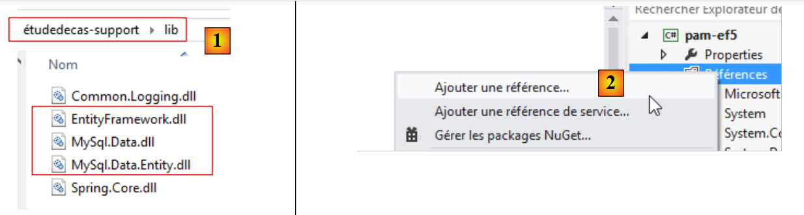 |
Abbiamo inserito altre DLL nella cartella [lib]. Le useremo in seguito. In [2], aggiungiamo queste nuove DLL al progetto.
 |
- In [3], navigate nel file system fino alla cartella [lib];
- In [4], selezionare le tre DLL e quindi fare clic due volte su OK;
- In [5], le tre DLL sono state aggiunte ai riferimenti del progetto.
Abbiamo bisogno di un'altra DLL. Questa si trova tra quelle del .NET Framework del computer.
 |
- In [1], aggiungere un nuovo riferimento al progetto;
 |
- In [2], selezionare [Assemblies];
- In [3], digitare [system.component];
- In [4], selezionare l'assembly [System.ComponentModel.DataAnnotations];
- In [5], il riferimento è stato aggiunto.
Ora siamo pronti per scrivere il codice e configurare.
9.22.4. Entità di Entity Framework
Le entità di Entity Framework sono classi che incapsulano le righe delle varie tabelle del database. Esaminiamole:
Nel livello [web], abbiamo utilizzato le entità [Employee, Contributions, Benefits] (vedere la sezione 9.7.3, pagina 211). Non erano rappresentazioni esatte delle tabelle. Pertanto, le colonne [ID, VERSIONING] sono state ignorate. In questo caso, non sarà così perché vengono utilizzate dall'ORM EF5. Aggiungeremo quindi le proprietà mancanti. Creiamo queste entità in una cartella [Models] all'interno del progetto:
 |
Il loro nuovo codice è ora il seguente:
Classe [Cotisations]
using System;
namespace Pam.EF5.Entites
{
public class Cotisations
{
public int Id { get; set; }
public double CsgRds { get; set; }
public double Csgd { get; set; }
public double Secu { get; set; }
public double Retraite { get; set; }
public int Versioning { get; set; }
// signature
public override string ToString()
{
return string.Format("Cotisations[{0},{1},{2},{3}, {4}, {5}]", Id, Versioning, CsgRds, Csgd, Secu, Retraite);
}
}
}
- riga 3: lo spazio dei nomi è stato adattato al nuovo progetto;
- le proprietà nelle righe 7 e 12 sono state aggiunte per riflettere la struttura della tabella [contributions];
- riga 17: il metodo [ToString] ora visualizza i due nuovi campi.
Classe [Indemnites]
using System;
namespace Pam.EF5.Entites
{
public class Indemnites
{
public int Id { get; set; }
public int Indice { get; set; }
public double BaseHeure { get; set; }
public double EntretienJour { get; set; }
public double RepasJour { get; set; }
public double IndemnitesCp { get; set; }
public int Versioning { get; set; }
// signature
public override string ToString()
{
return string.Format("Indemnités[{0},{1},{2},{3},{4}, {5}, {6}]", Id, Versioning, Indice, BaseHeure, EntretienJour, RepasJour, IndemnitesCp);
}
}
}
- riga 3: lo spazio dei nomi è stato adattato al nuovo progetto;
- le proprietà nelle righe 7 e 13 sono state aggiunte per riflettere la struttura della tabella [indemnites];
- riga 18: il metodo [ToString] ora visualizza i due nuovi campi.
Classe [Employee]
using System;
namespace Pam.EF5.Entites
{
public class Employe
{
public int Id { get; set; }
public string SS { get; set; }
public string Nom { get; set; }
public string Prenom { get; set; }
public string Adresse { get; set; }
public string Ville { get; set; }
public string CodePostal { get; set; }
public Indemnites Indemnites { get; set; }
public int Versioning { get; set; }
// signature
public override string ToString()
{
return string.Format("Employé[{0},{1},{2},{3},{4},{5}, {6}, {7}]", Id, Versioning, SS, Nom, Prenom, Adresse, Ville, CodePostal);
}
}
}
- riga 3: lo spazio dei nomi è stato adattato al nuovo progetto;
- le proprietà nelle righe 8 e 16 sono state aggiunte per riflettere la struttura della tabella [employees];
- riga 21: il metodo [ToString] ora visualizza i due nuovi campi.
Per poter essere utilizzate dall'ORM EF5, le proprietà di queste classi devono essere annotate.
Compito: Utilizzando la sezione 3.4 [Creazione del database dalle entità] di [refEF5], aggiungere le annotazioni richieste da EF5 alle entità [Employee, Contributions, Benefits].
Suggerimenti:
- è sufficiente creare le annotazioni. Non seguire la sezione [creazione del database] del paragrafo di riferimento;
- per l'annotazione [Table], segui l'esempio MySQL nella sezione 4.2 di [refEF5];
- per l'annotazione [ConcurrencyCheck] sulla proprietà [Versioning], segui l'esempio Oracle nella sezione 5.2 di [refEF5];
- per la chiave esterna che la tabella [employes] ha sulla tabella [indemnités], segui l'esempio 3.4.2 da [refEF5]. Aggiungerai così una nuova proprietà all'entità [Employe]:
public int IndemniteId { get; set; }
il cui valore sarà quello della colonna [INDEMNITES_ID] nella tabella [employes]. Si applicheranno annotazioni di chiave esterna alle proprietà [IndemniteId] e [Indemnites] dell'entità [Employe]. Per farlo, seguire l'Esempio 3.4.2 in [refEF5];
- non gestirai le relazioni inverse delle chiavi esterne;
- questo compito richiede una certa lettura di [refEF5].
9.22.5. Configurazione dell'ORM EF5
Mettiamo il progetto nel contesto:
 |
Il livello [EF5] accederà al database tramite il connettore [ADO.NET] per il DBMS MySQL. Per accedere a questo database sono necessarie alcune informazioni. Queste informazioni si trovano in varie parti del progetto.
Per prima cosa, dobbiamo creare il contesto del database. Questo contesto è una classe derivata dalla classe di sistema [System.Data.Entity.DbContext]. Viene utilizzato per definire le rappresentazioni a livello di oggetti delle tabelle del database. Inseriremo questa classe nella cartella [Models] del progetto insieme alle entità EF5:
 |
La classe [DbPamContext] sarà la seguente:
using Pam.EF5.Entites;
using System.Data.Entity;
namespace Pam.Models
{
public class DbPamContext : DbContext
{
public DbSet<Employe> Employes { get; set; }
public DbSet<Cotisations> Cotisations { get; set; }
public DbSet<Indemnites> Indemnites { get; set; }
}
}
- riga 6: la classe [DbPamContext] deriva dalla classe di sistema [DbContext];
- righe 8–10: le rappresentazioni a oggetti delle tre tabelle del database. Il loro tipo è [DbSet<Entity>], dove [Entity] è una delle entità di Entity Framework che abbiamo appena definito. Il tipo [DbSet] può essere visto come una raccolta di entità. Può essere interrogato utilizzando LINQ (Language-Integrated Query). Si consiglia ai lettori che non hanno familiarità con LINQ di leggere la sezione 3.5.4 [Imparare LINQ con LINQPad] in [refEF5].
D'ora in poi ci riferiremo alla classe [DbPamContext] come al contesto di persistenza del database [dbpam_ef5]. Si tratta della terminologia standard utilizzata negli ORM (Object-Relational Mapper). Questo contesto di persistenza è una rappresentazione orientata agli oggetti del database. Ci riferiamo anche alla sincronizzazione del contesto di persistenza con il database: le modifiche, le aggiunte e le eliminazioni apportate al contesto di persistenza si riflettono nel database. Questa sincronizzazione avviene in momenti specifici: quando il contesto di persistenza viene chiuso, alla fine di una transazione o prima di una query SQL SELECT sul database.
Le informazioni relative al DBMS e al database sono memorizzate in [App.config].
 |
La configurazione necessaria in [app.config] è spiegata nelle seguenti sezioni di [refEF5]:
- 3.4 per il DBMS SQL Server. Qui sono illustrati i principi fondamentali della configurazione di EF5;
- 4.2 per il DBMS MySQL.
Seguiamo quest'ultima sezione e configuriamo il file [app.config] come segue:
<?xml version="1.0" encoding="utf-8" ?>
<configuration>
<startup>
<supportedRuntime version="v4.0" sku=".NETFramework,Version=v4.5" />
</startup>
<!-- configuration EF5 -->
<!-- database connection string [dbam_ef5] -->
<connectionStrings>
<add name="DbPamContext"
connectionString="Server=localhost;Database=dbpam_ef5;Uid=root;Pwd=;"
providerName="MySql.Data.MySqlClient" />
</connectionStrings>
<!-- the MySQL factory provider -->
<system.data>
<DbProviderFactories>
<remove invariant="MySql.Data.MySqlClient"/>
<add name="MySQL Data Provider" invariant="MySql.Data.MySqlClient" description=".Net Framework Data Provider for MySQL"
type="MySql.Data.MySqlClient.MySqlClientFactory, MySql.Data, Version=6.5.4.0, Culture=neutral, PublicKeyToken=C5687FC88969C44D"
/>
</DbProviderFactories>
</system.data>
</configuration>
- Sono state aggiunte le righe da 6 a 21. Devono essere inserite all'interno del tag <configuration> alle righe 2 e 22;
- Righe 8–12: definiscono le stringhe di connessione al database, un concetto ADO.NET (vedere la sezione 7.3.5 in [refC#]);
- Righe 9–11: definiscono la stringa di connessione al database MySQL [dbpam_ef5];
- riga 9: il nome della stringa di connessione. Qui non è possibile inserire qualsiasi cosa. Per impostazione predefinita, è necessario inserire il nome della classe che implementa il contesto del database:
public class DbPamContext : DbContext
{
public DbSet<Employe> Employes { get; set; }
public DbSet<Cotisations> Cotisations { get; set; }
public DbSet<Indemnites> Indemnites { get; set; }
}
La classe si chiama [DbPamContext]. Alla riga 9 di [app.config], è necessario impostare [name="DbPamContext"];
- Riga 10: una stringa di connessione specifica per il DBMS MySQL:
- [Server=localhost]: indirizzo IP del computer che ospita il DBMS. In questo caso, si tratta del computer locale [localhost];
- [Database=dbpam_ef5;]: nome del database,
- [Uid=root;]: il nome utente utilizzato per connettersi al database,
- [Pwd=;]: password per questo accesso. In questo caso, nessuna password;
- riga 10: [providerName="MySql.Data.MySqlClient"] è il nome del provider ADO.NET da utilizzare. Questo nome corrisponde all'attributo [invariant] alla riga 17. È possibile utilizzare qualsiasi nome purché si segua la regola precedente e non sia già stato registrato un provider con lo stesso invariant;
- Righe 15–20: definiscono una factory di provider ADO.NET. Il concetto di [DbProviderFactory] mi risulta un po' vago. A giudicare dal nome, sembra trattarsi di una classe in grado di generare il provider ADO.NET che consente l'accesso al DBMS, in questo caso MySQL 5. Queste righe vengono solitamente copiate e incollate. Sono necessarie. Presta attenzione all'attributo [Version=6.5.4.0] alla riga 16. Questo numero di versione deve corrispondere al numero di versione della DLL [MySql.Data] che hai aggiunto ai riferimenti del progetto:
 |
- La riga 16 è importante. Poiché non è possibile installare due provider con lo stesso nome, iniziate rimuovendo qualsiasi provider esistente che potrebbe avere lo stesso nome di quello che state installando alla riga 17;
Questo è tutto. È complicato e confuso la prima volta che lo si fa, ma col tempo diventa semplice perché si tratta sempre dello stesso processo che si ripete.
9.22.6. Test del livello [EF5]
Siamo pronti a testare il nostro livello [EF5]. Lo facciamo utilizzando il programma [Program.cs] esistente:
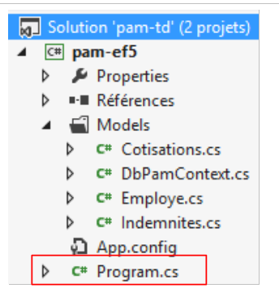 |
Visualizzeremo il contenuto del database. Se ci riusciremo, sarà un primo segnale che la nostra configurazione è corretta. Un esempio di codice è disponibile nella sezione 3.5.3 di [refEF5]. Il codice per [Program.cs] sarà il seguente:
using Pam.EF5.Entites;
using Pam.Models;
using System;
namespace Pam
{
class Program
{
static void Main(string[] args)
{
try
{
using (var context = new DbPamContext())
{
// display table contents
Console.WriteLine("Liste des employés ----------------------------------------");
foreach (Employe employe in context.Employes)
{
Console.WriteLine(employe);
}
Console.WriteLine("Liste des indemnités --------------------------------------");
foreach (Indemnites indemnite in context.Indemnites)
{
Console.WriteLine(indemnite);
}
Console.WriteLine("Liste des cotisations -------------------------------------");
foreach (Cotisations cotisations in context.Cotisations)
{
Console.WriteLine(cotisations);
}
}
}
catch (Exception e)
{
Console.WriteLine(e);
return;
}
}
}
}
- riga 13: tutte le operazioni sul database vengono eseguite tramite questo contesto di database. Abbiamo implementato questo contesto utilizzando la classe [DbPamContext]. Lo chiamiamo anche contesto di persistenza del database;
- righe 13, 31: le operazioni sul contesto di persistenza vengono eseguite all'interno di un blocco [using]. Il contesto di persistenza viene aperto all'inizio del blocco [using] e chiuso automaticamente al termine del blocco. Ciò significa che qualsiasi modifica apportata al contesto di persistenza all'interno del blocco [using] verrà riflessa nel database al termine del blocco. Una serie di istruzioni SQL viene quindi inviata al database all'interno di una transazione. Ciò significa che se un'istruzione SQL fallisce, tutte le istruzioni SQL emesse in precedenza vengono annullate. EF5 genera quindi un'eccezione;
- riga 17: l'espressione [context.Employees] fa riferimento al modello a oggetti della tabella [employees]. Ricordiamo che [Employees] è una proprietà del contesto di persistenza [DbPamContext]:
public class DbPamContext : DbContext
{
public DbSet<Employe> Employes { get; set; }
public DbSet<Cotisations> Cotisations { get; set; }
public DbSet<Indemnites> Indemnites { get; set; }
}
- riga 17: il fatto che il ciclo [foreach] iteri sulla collezione [context.Employees] recupererà tutti i dipendenti dal database nel contesto di persistenza. EF5 emetterà quindi un'istruzione SQL SELECT;
- righe 17–20: si esegue l'iterazione sulla collezione di dipendenti e, alla riga 19, si utilizza il metodo [ToString] della classe [Employee] per visualizzare i dipendenti sulla console;
- righe 21–25: lo stesso vale per la collezione dei benefici;
- righe 27–30: lo stesso vale per la raccolta dei contributi.
Rivediamo la definizione dell'entità [Employee]:
using System;
namespace Pam.EF5.Entites
{
public class Employe
{
public int Id { get; set; }
public string SS { get; set; }
public string Nom { get; set; }
public string Prenom { get; set; }
public string Adresse { get; set; }
public string Ville { get; set; }
public string CodePostal { get; set; }
public Indemnites Indemnites { get; set; }
public int Versioning { get; set; }
// signature
public override string ToString()
{
return string.Format("Employé[{0},{1},{2},{3},{4},{5}, {6}, {7}]", Id, Versioning, SS, Nom, Prenom, Adresse, Ville, CodePostal);
}
}
}
- Riga 15: Un dipendente ha un riferimento a un beneficio.
Quando un dipendente viene inserito nel contesto di persistenza, viene inserita anche la sua indennità? La risposta predefinita è no. Questo è il concetto di [caricamento pigro]. Le entità a cui si fa riferimento all'interno di un'altra entità non vengono inserite nel contesto di persistenza insieme a quell'altra entità. Vengono inserite solo quando richiesto dal codice all'interno di un contesto di persistenza aperto. Se il contesto di persistenza è chiuso, viene generata un'eccezione.
Pertanto, se il metodo [ToString] avesse fatto riferimento alla proprietà [Indemnites] come segue:
// signature
public override string ToString()
{
return string.Format("Employé[{0},{1},{2},{3},{4},{5},{6},{7},{8}]", Id, Versioning, SS, Nom, Prenom, Adresse, Ville, CodePostal, Indemnites);
}
la seguente operazione in [Program.cs]:
foreach (Employe employe in context.Employes)
{
Console.WriteLine(employe);
}
avrebbe restituito al contesto di persistenza non solo i dipendenti ma anche i loro benefici, poiché nella riga 3 viene chiamato il metodo [Employee.ToString] che fa riferimento all'entità [Benefits].
L'esecuzione di [Program.cs] produce i seguenti risultati:
Cosa fare se non funziona? Sei nei guai... Ci sono molte possibili cause di errore:
- controlla la configurazione di EF5 (sezione 9.22.5);
- controlla le tue entità Entity Framework (sezione 9.22.4).
9.22.7. [EF5] DLL del livello
Stiamo trasformando il nostro progetto in una libreria di classi in modo che, al momento della generazione, venga generato un assembly .dll anziché un .exe. Questo viene fatto nelle proprietà del progetto come mostrato nella sezione 9.7.6, per il livello aziendale simulato.
Attività: Modificare il tipo di progetto [pam-ef5] in una libreria di classi, quindi rigenerare il progetto.
9.23. Passaggio 16: Implementazione del livello [DAO]
9.23.1. L'interfaccia del livello [DAO]
 |
Come abbiamo fatto per il livello [business] simulato, il livello [DAO] sarà accessibile tramite un'interfaccia. Quale sarà?
Diamo un'occhiata all'interfaccia [IPamMetier] del livello [business] simulato che abbiamo creato:
public interface IPamMetier {
// list of all employee identities
Employe[] GetAllIdentitesEmployes();
// ------- salary calculation
FeuilleSalaire GetSalaire(string ss, double heuresTravaillées, int joursTravaillés);
}
Riga 3: Il metodo [GetAllEmployeeIDs] viene utilizzato per popolare l'elenco a discesa nella pagina iniziale:
 |
Questi dipendenti devono essere recuperati dal database.
Riga 6: il metodo [GetSalary] calcola la busta paga di un dipendente di cui è noto il numero di previdenza sociale (SSN). Ricordiamo la definizione del tipo [PayStub]:
public class FeuilleSalaire
{
// automatic properties
public Employe Employe { get; set; }
public Cotisations Cotisations { get; set; }
public ElementsSalaire ElementsSalaire { get; set; }
}
Le informazioni nelle righe 5 e 6 proverranno dal database. Ricorda che un dipendente ha una proprietà [Indennità]. Anche queste informazioni devono essere recuperate.
Potremmo quindi iniziare con la seguente interfaccia per il livello [DAO]:
public interface IPamDao {
// list of all employee identities
Employe[] GetAllIdentitesEmployes();
// an individual employee with benefits
Employe GetEmploye(string ss);
// list of all contributions
Cotisations GetCotisations();
}
9.23.2. Il progetto Visual Studio
Compito: Aggiungere un nuovo progetto [console] denominato [pam-dao] alla soluzione [pam-td]. Impostarlo come progetto di avvio della soluzione.

9.23.3. Aggiunta dei riferimenti necessari al progetto
Diamo un'occhiata al progetto nel suo complesso:
 |
Il progetto [pam-dao] richiede una serie di DLL:
- tutte quelle a cui fa riferimento il progetto [pam-ef5];
- quella del progetto [pam-ef5] stesso.
Inoltre, useremo [Spring.net] per istanziare il livello [DAO]. Per questo, abbiamo bisogno delle DLL [Spring.core] e [Common.Logging]. Queste DLL si trovano nella cartella [lib] dei materiali del caso di studio.
Compito: aggiungere questi vari riferimenti al progetto [pam-dao].
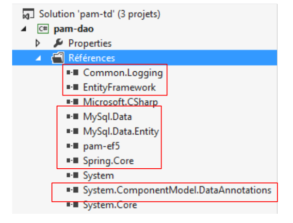 |
9.23.4. Implementazione del livello [DAO]
 |
Sopra, la classe [PamException] è quella definita nella sezione 9.7.4. Modifichiamo semplicemente il suo namespace (riga 1 qui sotto):
namespace Pam.Dao.Entites
{
// exceptional class
public class PamException : Exception
{
....
}
}
L'interfaccia [IPamDao] è quella che abbiamo appena definito nella Sezione 9.23.1:
using Pam.EF5.Entites;
namespace Pam.Dao.Service
{
public interface IPamDao
{
// list of all employee identities
Employe[] GetAllIdentitesEmployes();
// an individual employee with benefits
Employe GetEmploye(string ss);
// list of all contributions
Cotisations GetCotisations();
}
}
La classe [PamDaoEF5] implementa questa interfaccia utilizzando l'ORM EF5. Il suo codice è il seguente:
using Pam.Dao.Entites;
using Pam.EF5.Entites;
using Pam.Models;
using System;
using System.Linq;
namespace Pam.Dao.Service
{
public class PamDaoEF5 : IPamDao
{
// private fields
private Cotisations cotisations;
private Employe[] employes;
// Manufacturer
public PamDaoEF5()
{
// contribution
try
{
....
}
catch (Exception e)
{
throw new PamException("Erreur système lors de la construction de la couche [DAO]", e, 1);
}
}
// GetCotisations
public Cotisations GetCotisations()
{
return cotisations;
}
// GetAllIdentitesEmploye
public Employe[] GetAllIdentitesEmployes()
{
return employes;
}
// GetEmploye
public Employe GetEmploye(string SS)
{
try
{
....
catch (Exception e)
{
throw new PamException(string.Format("Erreur système lors de la recherche de l'employé [{0}]", SS), e, 2);
}
}
}
}
Nota:
- riga 10: la classe [PamDaoEF5] implementa l'interfaccia [IPamDao];
- le tabelle [contributions] e [employees] sono memorizzate nella cache nelle proprietà delle righe 13–14. I dipendenti non includono le loro indennità;
- righe 17–28: il costruttore inizializza le righe 13–14;
- Righe 43–52: il metodo [GetEmploye] restituisce un dipendente insieme alle relative indennità. Accetta come parametro il numero di previdenza sociale del dipendente. Se il dipendente non esiste nel database, il metodo restituirà un puntatore nullo.
Compito: completare il codice per la classe [PamDaoEF5].
Per il costruttore, utilizzare come riferimento il codice di test relativo al livello [EF5] presentato nella sezione 9.22.6. Per il metodo [GetEmploye], utilizzare come riferimento l'esempio riportato nella sezione 3.5.7 [Caricamento immediato e differito] di [refEF5].
9.23.5. Configurazione del livello [DAO]
Come fatto nella Sezione 9.22.5, dobbiamo configurare EF5 nel file [App.config] del progetto:
 |
Attività 1: Configurare EF5 in [App.config]. È sufficiente replicare quanto fatto nel file [App.config] del livello [EF5].
Il nostro programma di test utilizzerà [Spring.net] per ottenere un riferimento al livello [DAO].
Compito 2: Utilizzando le informazioni della Sezione 9.20.2, modificare il file di configurazione [app.config] nel progetto [pam-dao] in modo che definisca un oggetto Spring denominato [pamdao] associato alla classe [PamDaoEF5] appena creata. I file [app.config] e [web.config] hanno la stessa struttura. Assicurati che il tag <configSections> sia il primo tag che si incontra dopo il tag radice <configuration>.
9.23.6. Test del livello [DAO]
Siamo pronti per testare il nostro livello [DAO]. Lo facciamo utilizzando il programma [Program.cs] esistente:
 |
Testeremo le varie funzionalità dell'interfaccia del livello [DAO]. Il codice per [Program.cs] sarà il seguente:
using Pam.Dao.Service;
using Pam.EF5.Entites;
using Spring.Context.Support;
using System;
namespace Pam.Dao.Tests
{
public class Program
{
public static void Main()
{
try
{
// layer instantiation [dao]
IPamDao pamDao = (IPamDao)ContextRegistry.GetContext().GetObject("pamdao");
// list of employee identities
foreach (Employe Employe in pamDao.GetAllIdentitesEmployes())
{
Console.WriteLine(Employe.ToString());
}
// an employee with benefits
Console.WriteLine("------------------------------------");
Employe e = pamDao.GetEmploye("254104940426058");
Console.WriteLine("employé= {0}, indemnités={1}", e, e.Indemnites);
Console.WriteLine("------------------------------------");
// an employee who doesn't exist
Employe employe = pamDao.GetEmploye("xx");
Console.WriteLine("Employé n° xx");
Console.WriteLine((employe == null ? "null" : employe.ToString()));
Console.WriteLine("------------------------------------");
// list of contributions
Cotisations cotisations = pamDao.GetCotisations();
Console.WriteLine(cotisations.ToString());
}
catch (Exception ex)
{
// exception display
Console.WriteLine(ex.ToString());
}
//break
Console.ReadLine();
}
}
}
- Riga 15: Otteniamo un riferimento al livello [DAO] utilizzando [Spring.net].
I risultati dell'esecuzione di questo programma sono i seguenti:
9.23.7. DLL di livello [DAO]
Compito: convertire il tipo di progetto [pam-dao] in una libreria di classi, quindi rigenerare il progetto (ripetere i passaggi della sezione 9.22.7).
9.24. Passaggio 17: Configurazione del livello [business]
9.24.1. L'interfaccia del livello [business]
 |
L'interfaccia del livello [business] sarà l'interfaccia [IPamMetier] del livello [business] simulato che abbiamo costruito nella sezione 9.7.2.
public interface IPamMetier {
// list of all employee identities
Employe[] GetAllIdentitesEmployes();
// ------- salary calculation
FeuilleSalaire GetSalaire(string ss, double heuresTravaillées, int joursTravaillés);
}
9.24.2. Il progetto Visual Studio
Compito: Aggiungere un nuovo progetto [console] denominato [pam-metier] alla soluzione [pam-td]. Impostarlo come progetto di avvio della soluzione.

9.24.3. Aggiunta dei riferimenti necessari al progetto
Diamo un'occhiata al progetto nel suo complesso:
 |
Il progetto [pam-metier] richiede una serie di DLL:
- tutte quelle a cui fanno riferimento i progetti [pam-dao] e [pam-ef5];
- le DLL dei progetti [pam-dao] e [pam-ef5] stessi.
Compito: Aggiungere questi vari riferimenti al progetto [pam-metier].

9.24.4. Implementazione del livello [business]
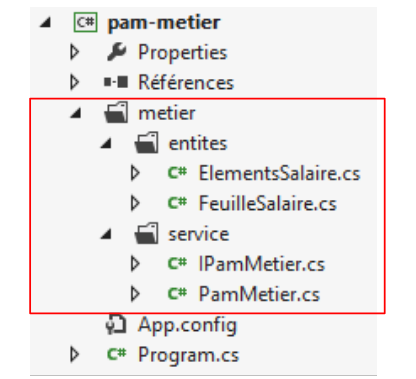 |
Sopra, troviamo quattro elementi già utilizzati nel livello [business] simulato (vedi Sezione 9.7). Potrebbero esserci modifiche agli spazi dei nomi importati da queste diverse classi. Gestirle. La classe [PamMetier] implementa l'interfaccia [IPamMetier] come segue:
using Pam.Dao.Service;
using Pam.EF5.Entites;
using Pam.Metier.Entites;
using System;
namespace Pam.Metier.Service
{
public class PamMetier : IPamMetier
{
// reference to layer [DAO] initialized by Spring
public IPamDao PamDao { get; set; }
// list of all employee identities
public Employe[] GetAllIdentitesEmployes()
{
...
}
// an individual employee with benefits
public Employe GetEmploye(string ss)
{
...
}
// contributions
public Cotisations GetCotisations()
{
...
}
// wage calculation
public FeuilleSalaire GetSalaire(string ss, double heuresTravaillées, int joursTravaillés)
{
// SS : employee's SS number
// HeuresTravaillées: number of hours worked
// Days worked: number of days worked
...
}
}
- Riga 13: Abbiamo un riferimento al livello [DAO]. Verrà inizializzato da Spring quando verrà istanziata la classe [PamMetier]. Pertanto, quando vengono eseguiti i vari metodi, la riga 13 è già stata inizializzata.
Compito: Completare il codice per la classe [PamMetier]. Se in [GetSalaire] si riscontra che il dipendente con il numero di previdenza sociale non esiste, verrà generata un'eccezione [PamException]. Il metodo per il calcolo dello stipendio è spiegato nella sezione 9.5. Assicurarsi di arrotondare tutti i calcoli intermedi a due cifre decimali.
9.24.5. Configurazione del livello [business]
Come fatto nella sezione 9.22.5, dobbiamo configurare EF5 nel file [app.config] del progetto:
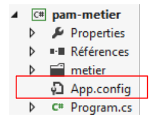 |
Compito 1: Configurare EF5 in [app.config]. È sufficiente replicare quanto fatto nel file [app.config] del livello [EF5].
Il nostro programma di test utilizzerà [Spring.net] per ottenere un riferimento al livello [business].
Compito 2: Utilizzando quanto fatto in precedenza nella sezione 9.23.5, modificare il file di configurazione [app.config] del progetto [pam-metier] in modo che definisca un oggetto Spring denominato [pammetier] associato alla classe [PamMetier] appena creata. Il modo più semplice è copiare il file [app.config] dal progetto [pam-dao] e aggiungere ciò che manca.
Qui c'è una sfida. Non solo devi istanziare il livello [business] con la classe [PamMetier], ma devi anche inizializzare la sua proprietà [PamDao]:
// référence sur la couche [DAO] initialisée par Spring
public IPamDao PamDao { get; set; }
La configurazione Spring in [app.config] è quindi la seguente:
<spring>
<context>
<resource uri="config://spring/objects" />
</context>
<objects xmlns="http://www.springframework.net">
<object id="pamdao" type=" Pam.Dao.Service.PamDaoEF5, pam-dao"/>
<object id="pammetier" type="Pam.Metier.Service.PamMetier, pam-metier">
<property name="PamDao" ref="pamdao" />
</object>
</objects>
</spring>
- riga 6: definisce l'oggetto [pamdao] associato alla classe [PamDaoEF5];
- riga 7: definisce l'oggetto [pammetier] associato alla classe [PamMetier];
- riga 8: il tag [property] viene utilizzato per inizializzare una proprietà pubblica della classe [PamMetier]. L'attributo [name="PamDao"] corrisponde al nome della proprietà da inizializzare nella classe [PamMetier]. L'attributo [ref="pamdao"] indica che la proprietà viene inizializzata con un riferimento, quello dell'oggetto [pamdao] della riga 6, e quindi con il riferimento proveniente dal livello [DAO]. Questo è ciò che volevamo.
9.24.6. Test del livello [business]
Siamo pronti a testare il nostro livello [business]. Lo facciamo utilizzando il programma [Program.cs] esistente:
 |
Verificheremo le varie funzionalità dell'interfaccia del livello [business]. Il codice per [Program.cs] sarà il seguente:
using System;
using Pam.Dao.Entites;
using Pam.Metier.Service;
using Spring.Context.Support;
using Pam.EF5.Entites;
namespace Pam.Metier.Tests
{
public class Program
{
public static void Main()
{
try
{
// instantiation layer [business]
IPamMetier pamMetier = ContextRegistry.GetContext().GetObject("pammetier") as IPamMetier;
// list of employee identities
Console.WriteLine("Employés -----------------------------");
foreach (Employe Employe in pamMetier.GetAllIdentitesEmployes())
{
Console.WriteLine(Employe);
}
// payslip calculations
Console.WriteLine("salaires -----------------------------");
Console.WriteLine(pamMetier.GetSalaire("260124402111742", 30, 5));
Console.WriteLine(pamMetier.GetSalaire("254104940426058", 150, 20));
try
{
Console.WriteLine(pamMetier.GetSalaire("xx", 150, 20));
}
catch (PamException ex)
{
Console.WriteLine(string.Format("PamException : {0}", ex.Message));
}
}
catch (Exception ex)
{
Console.WriteLine(string.Format("Exception : {0}, Exception interne : {1}", ex.Message, ex.InnerException == null ? "" : ex.InnerException.Message));
}
// break
Console.ReadLine();
}
}
}
- Riga 16: Otteniamo un riferimento al livello [business] utilizzando [Spring.net].
I risultati dell'esecuzione di questo programma sono i seguenti:
9.24.7. DLL del livello [business]
Compito: convertire il tipo di progetto [pam-business] in una libreria di classi, quindi rigenerare il progetto (ripetere i passaggi della sezione 9.22.7).
9.25. Passaggio 18: Implementazione del livello [web]
Siamo giunti al livello finale della nostra architettura, il livello [web]:
 |
Riutilizzeremo il livello [web] che abbiamo sviluppato utilizzando un livello [business] simulato.
9.25.1. Il progetto Visual Studio
Torniamo a Visual Studio Express 2012 for the Web per collegare il nostro livello web ai livelli [logica di business, DAO, EF5] che abbiamo appena sviluppato. Ciò comporta principalmente alcune configurazioni e alcune modifiche ai namespace.
In Visual Studio Express 2012 for Web, caricare la soluzione [pam-td]:
 |
- in [1], la soluzione [pam-td] in Visual Studio Express for Web. Il progetto web [pam-web-01] torna visibile. Lo avevamo perso in Visual Studio Express for Desktop.
- La configurazione del progetto web [pam-web-01] dovrà essere modificata. Anziché modificare un progetto funzionante, apporteremo le modifiche a una copia di questo progetto. Innanzitutto, in [2], rimuoviamo il progetto dalla soluzione (questo non elimina nulla dal file system).
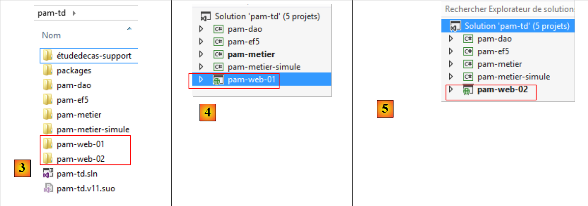 |
- In [3], utilizzando Esplora risorse, duplichiamo la cartella [pam-web-01] in [pam-web-02];
- In [4], aggiungiamo il progetto [pam-web-02] alla soluzione [pam-td]. Appare con il nome [pam-web-01];
- In [5], cambiamo questo nome in [pam-web-02] e impostiamo questo progetto come progetto di avvio;
 |
- In [6], carichiamo il vecchio progetto [pam-web-01]. Ora abbiamo tutti i nostri progetti. Assicuriamoci di lavorare con [pam-web-02].
9.25.2. Aggiunta dei riferimenti necessari al progetto
Diamo un'occhiata al progetto nel suo complesso:
 |
Il progetto [pam-web-02] richiede una serie di DLL:
- tutte quelle a cui fanno riferimento i progetti [pam-metier], [pam-dao] e [pam-ef5];
- quelle dei progetti [pam-metier], [pam-dao] e [pam-ef5] stessi.
Compito: aggiungere questi vari riferimenti al progetto [pam-web-02]. Il riferimento al progetto [pam-metier-simule] deve essere rimosso. Stiamo passando al livello [business]. Alcune DLL sono già presenti nei riferimenti. Rimuovile e poi aggiungi quelle necessarie.

9.25.3. Implementazione del livello [web]
Compilare il progetto [pam-web-02]. Verranno visualizzati degli errori, come ad esempio il seguente:

La classe [ApplicationModel] utilizza il tipo [Employee]. Con il livello [business] simulato, questo tipo era definito nello spazio dei nomi [Pam.Business.Entities]. Ora si trova nello spazio dei nomi [Pam.EF5.Entities]. Correggere questi errori come mostrato sopra.
9.25.4. Configurazione del livello [web]
Come fatto nella Sezione 9.24.5, dobbiamo configurare EF5 nel file [web.config] del progetto:
 |
Attività 1: Sostituire l'intero contenuto attuale di [web.config] con quello del file [app.config] del progetto [pam-metier].
Il file [Global.asax] della nostra applicazione web utilizza [Spring.net] per recuperare un riferimento al livello [business]:
try
{
// instantiation layer [business]
application.PamMetier = ContextRegistry.GetContext().GetObject("pammetier") as IPamMetier;
}
catch (Exception ex)
{
application.InitException = ex;
}
Riga 4: Richiediamo un riferimento all'oggetto Spring denominato [pammetier]. Questo è infatti il nome assegnato al livello [business] (verificalo nel tuo file [web.config]).
9.25.5. Test del livello [web]
Siamo pronti a testare il nostro livello [web]. Per prima cosa, cambieremo la sua porta di lavoro. Per impostazione predefinita, [pam-web-02] ha la stessa configurazione di [pam-web-01] e quindi funziona sulla stessa porta. L'esperienza dimostra che questo causa problemi: IIS continua a utilizzare il codice del progetto [pam-web-01]. Procedere come segue:
 |
 |
In [4], modificare il numero di porta, ad esempio cambiando la cifra delle unità.
Esegui il progetto [pam-web-02] premendo [Ctrl-F5]. Verrà quindi visualizzata la seguente pagina iniziale:
 |
In [1], recuperiamo i dipendenti dal database [dbpam_ef5]. Si noti che il dipendente [X X], che era presente nel livello [business] simulato, non è più presente. Eseguiamo una simulazione:
 |
In [2], vediamo lo stipendio effettivo anziché uno fittizio. Ora fermiamo il DBMS MySQL5 ed eseguiamo un'altra simulazione:
 |
In [3], abbiamo ottenuto una pagina di errore leggibile, anche se alcuni messaggi sono in inglese. Ora fermiamo nuovamente MySQL e rieseguiamo l'applicazione in VS utilizzando [Ctrl-F5]:
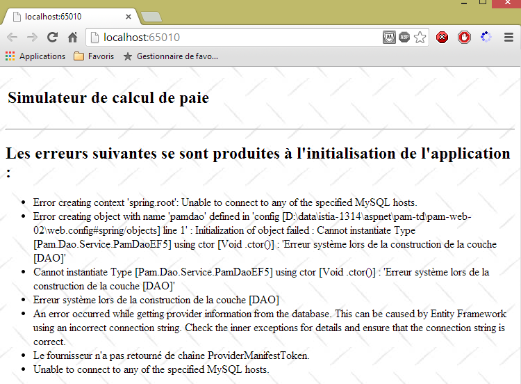
Otteniamo la vista [initFailed.cshtml] creata nella Sezione 9.20.4. Essa visualizza i messaggi di errore provenienti dallo stack delle eccezioni. Il lettore è invitato a eseguire ulteriori test.
9.26. Passaggio 19: Rendere accessibile su Internet un'applicazione ASP.NET
Quando si sviluppa un'applicazione ASP.NET con Visual Studio, la configurazione predefinita garantisce che l'applicazione sia accessibile solo all'indirizzo [localhost]. Qualsiasi altro indirizzo viene rifiutato dal server incorporato di Visual Studio, che restituisce quindi l'errore [400 Bad Request].
Ciò può essere osservato come segue:
- In una finestra DOS, prendere nota dell'indirizzo IP del computer di sviluppo:
Microsoft Windows [version 6.3.9600]
(c) 2013 Microsoft Corporation. Tous droits réservés.
dos>ipconfig
Configuration IP de Windows
Carte Ethernet Connexion au réseau local :
Suffixe DNS propre à la connexion. . . : ad.univ-angers.fr
Adresse IPv6 de liaison locale. . . . .: fe80::698b:455a:925:6b13%4
Adresse IPv4. . . . . . . . . . . . . .: 172.19.81.34
Masque de sous-réseau. . . . . . . . . : 255.255.0.0
Passerelle par défaut. . . . . . . . . : 172.19.0.254
Carte réseau sans fil Wi-Fi :
Statut du média. . . . . . . . . . . . : Média déconnecté
Suffixe DNS propre à la connexion. . . :
L'indirizzo IP è riportato qui alla riga 14. Se si dispone di una connessione Wi-Fi, l'indirizzo Wi-Fi del dispositivo apparirà alle righe 20 e seguenti.
- Controlla le proprietà del progetto [clicca con il tasto destro del mouse sul progetto / proprietà / scheda web]:

L'applicazione verrà eseguita sulla porta [65010] del computer [localhost].
- Esegui il progetto premendo [Ctrl-F5]

- Sostituisci [localhost] con l'indirizzo IP del computer:

Il server ha restituito una risposta [400 Bad Request]. Il server IIS Express utilizzato da Visual Studio accetta solo il nome [localhost].
Per rendere accessibile l'applicazione sviluppata a un URL come [http://adresseIP/contexte/...], è necessario utilizzare un server diverso da IIS Express, ad esempio un server IIS (non Express). Per verificare se è disponibile (normalmente nelle versioni Pro di Windows), andare al Pannello di controllo [Pannello di controllo\Sistema e sicurezza\Strumenti di amministrazione]:

Questa opzione non è sempre presente. In tal caso, andare su [Pannello di controllo \ Programmi] e installare gli Strumenti di amministrazione Web.
 |
Una volta che l'opzione [Gestione di Internet Information Services (IIS)] è disponibile, abilitala:
 |
Avvia il sito Web predefinito. Per farlo, è necessario che il [Servizio di pubblicazione sul World Wide Web] sia già in esecuzione:
 |
Una volta fatto ciò, inserisci l'URL [http://localhost] in un browser. Verifica innanzitutto che nessun altro server web stia già utilizzando la porta 80. In tal caso, arrestalo.
 |
Il server IIS ha risposto. Ora sostituisci [localhost] con l'indirizzo IP del tuo computer:
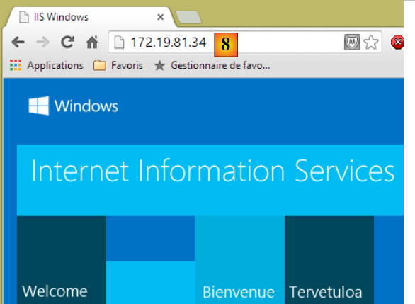 |
Funziona. Ora torniamo a Visual Studio:
- Per prima cosa, devi avviare Visual Studio in modalità [Amministratore]
 |
Una volta fatto ciò, è necessario modificare la configurazione del progetto web che si desidera distribuire [clic destro sul progetto / Proprietà / scheda Web]:
 |
È necessario selezionare il server IIS locale come server di distribuzione. Visual Studio imposta l'URL dell'applicazione. È possibile modificarlo. Eseguire il progetto premendo [Ctrl-F5]:
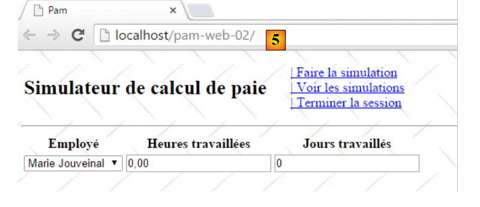 |
Ora sostituisci [localhost] con l'indirizzo IP del tuo computer:
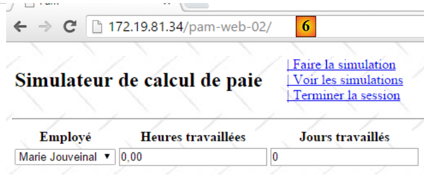 |
Se non disponi di un server IIS, puoi utilizzare un server ASP.NET gratuito come [Ultidev Web Server Pro], disponibile all'URL [http://ultidev.com/Download/]. Una volta installato, ci sono due modi per avviare un'applicazione web con questo server:
Il metodo rapido
Apri Esplora risorse e seleziona la cartella contenente l'applicazione ASP.NET che desideri distribuire:
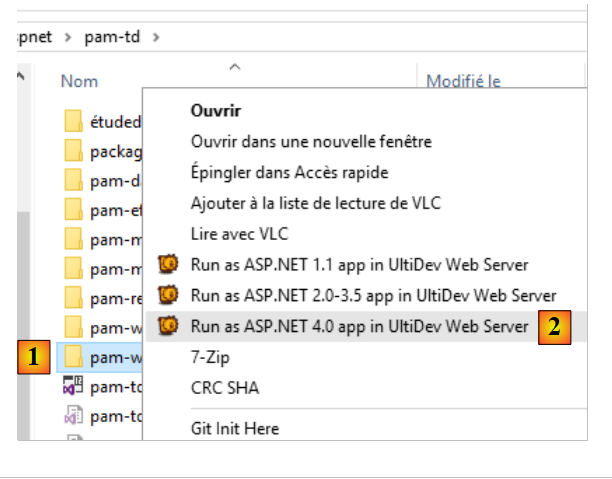 |
Il server web verrà quindi avviato e l'applicazione web verrà visualizzata in un browser:
 |
- In [3] è possibile arrestare o avviare il server web;
- In [4], è possibile modificare la porta di servizio dell'applicazione web;
Prima di avviare il server, il servizio [UWS HiPriv Services] riportato di seguito deve essere in esecuzione:
 |
Una volta avviato il server, l'interfaccia appare come segue:
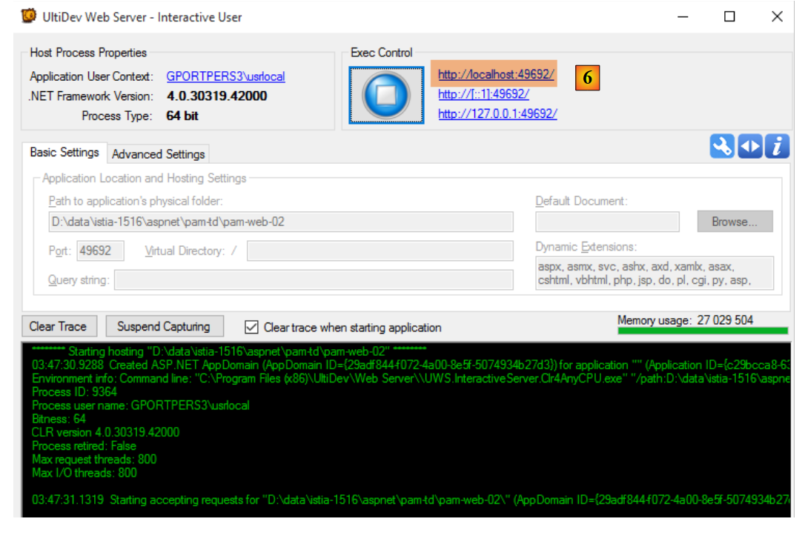 |
Cliccando sul link [6] viene visualizzata la prima pagina dell'applicazione:
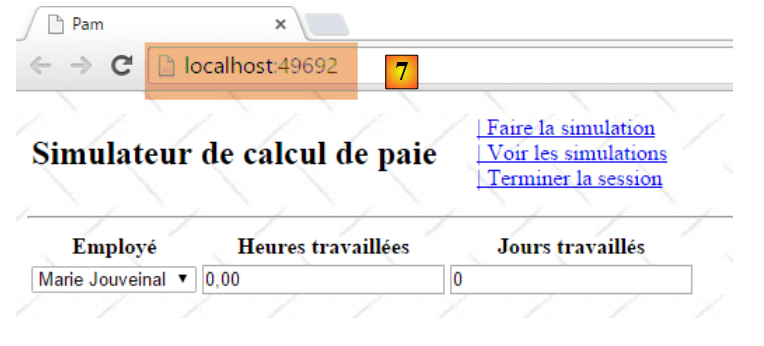 |
È quindi possibile inserire l'indirizzo IP del computer al posto di [localhost]:
 |
Quindi anche in questo caso viene accettato solo il nome [localhost].
Il metodo lungo
Avvia l'applicazione Ultidev Web Explorer
 |
e segui questi passaggi:
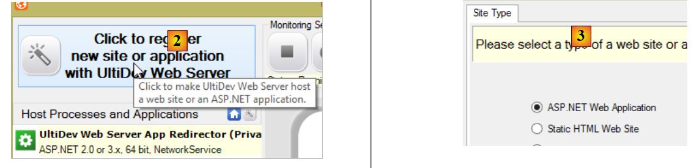 |
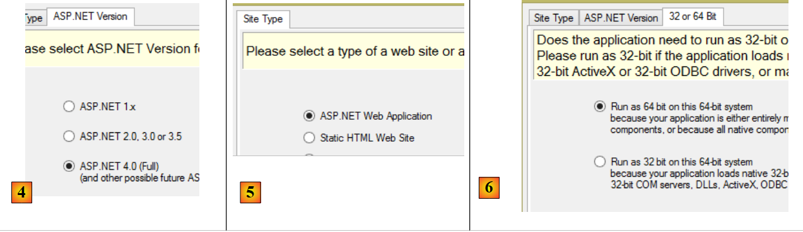 |
 |
- In [8], specificare la cartella dell'applicazione web da distribuire;
 |
- come indicato nei paragrafi [10-11], è necessario accedere all'applicazione web tramite l'URL [http://localhost:81/];
 |
 |
- Avviare il server web utilizzando [14];
 |
- accedere all'URL [19];
 |
- In [20], siamo riusciti ad accedere alla pagina desiderata utilizzando l'indirizzo IP locale del computer invece del nome [localhost]. Era esattamente quello che stavamo cercando;
Il server Ultidev è installato come servizio Windows che si avvia automaticamente. È possibile disabilitare l'avvio automatico del server Ultidev come segue:
- Andare su [Pannello di controllo\Sistema e sicurezza\Strumenti di amministrazione];
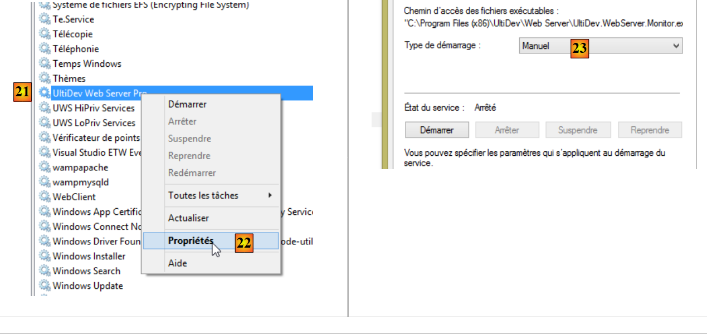 |
- [1, 2]: Selezionare le proprietà del servizio [Ultidev Web Server Pro];
- [3]: Impostare l'avvio su manuale.
Per avviare il server manualmente, utilizzare l'applicazione [Ultidev Web Explorer], ad esempio:
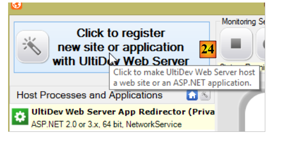 |
9.27. Passaggio 20: Generazione di un'app Android nativa
Se si dispone di un'applicazione a pagina singola (SPA), è possibile generare un eseguibile mobile (Android, iOS, Windows 8, ecc.) utilizzando lo strumento [PhoneGap] [http://phonegap.com/]. Esistono altri modi per farlo, in particolare con il prodotto open source Apache Cordova [https://cordova.apache.org/]. Lo strumento online disponibile sul sito web di Phonegap [http://build.phonegap.com/apps] “carica” il file ZIP del sito da convertire. La pagina iniziale deve essere denominata [index.html] e deve essere una pagina statica, ovvero non generata da un framework web (ASP.NET, JEE, PHP, ecc.). Inizieremo creando questa pagina.
9.27.1. L'architettura dell'applicazione
È importante ricordare che vogliamo creare un'app Android. Un'app di questo tipo ha spesso la seguente architettura:
 |
- in [1], l'utente utilizza un tablet Android che comunica con uno o più servizi web [2];
Torniamo al modello APU:
 |
- una pagina iniziale viene caricata nel browser (il diagramma sopra non specifica da dove provenga);
- le visualizzazioni successive vengono recuperate tramite chiamate Ajax [1-4]. Il browser non caricherà nuove pagine;
La vista iniziale può essere fornita o meno dallo stesso server delle altre viste recuperate tramite chiamate Ajax. Se non è fornita dallo stesso server, il JavaScript sulla pagina iniziale deve conoscere l'URL del server web che fornirà le altre viste. Questo sarà il caso dell'applicazione Android che stiamo per realizzare:
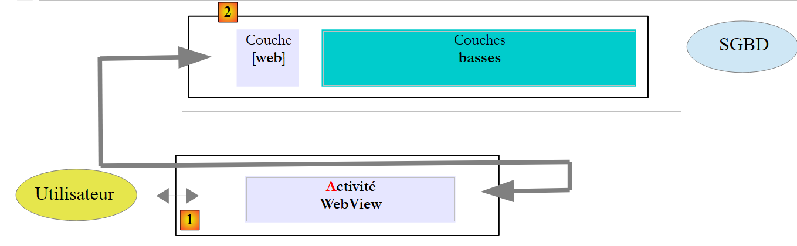 |
- la pagina statica [index.html] sarà incapsulata all'interno di un'applicazione Android nativa [1] dotata di funzionalità di browser e quindi in grado di eseguire il codice JavaScript incorporato nella pagina [index.html];
- questa pagina recupererà le altre viste tramite chiamate Ajax al server [2]. Per farlo, deve conoscere l'URL del server web;
Rifattoreremo l'applicazione [pam-web-02] in modo che funzioni in questa modalità. Pertanto, la prima pagina sarà la seguente:
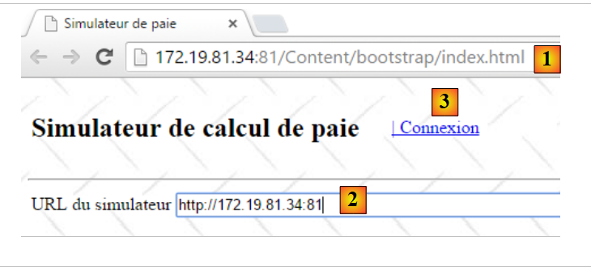 |
- in [1], l'URL della pagina iniziale dell'applicazione. Questo sarà fornito dal server Ultidev discusso nella Sezione 9.26;
- in [2], l'utente deve inserire l'URL del simulatore di busta paga. Potremmo codificarlo in modo fisso nel JavaScript della pagina iniziale, ma ciò complicherebbe i test: non appena cambiamo l'indirizzo IP (o la porta) del simulatore, dovremmo poi modificarlo nel codice JavaScript;
- in [3], il link [Login] che richiamerà la seguente vista:
 |
- Si noti che in [4] l'URL del browser non è cambiato. È ancora quello della pagina iniziale e rimarrà tale per l'intera durata dell'applicazione.
Una volta caricata questa vista, tutto funziona come prima: le diverse viste vengono caricate tramite chiamate Ajax. Vedremo che è necessario modificare pochissimo codice.
9.27.2. Rifattorizzazione del progetto [pam-web-02]
All'interno della cartella [Content] del progetto [pam-web-02], creiamo la seguente cartella [bootstrap] (il nome non ha importanza):
 |
Abbiamo incluso la pagina statica [index.html] e tutte le risorse di cui ha bisogno (file CSS e JS). La pagina [index.html] utilizza il codice della pagina master [_Layout.cshtml] del progetto Visual Studio, rimuovendo tutto ciò che non è statico. Il risultato è il seguente codice:
<!DOCTYPE html>
<html xmlns="http://www.w3.org/1999/xhtml">
<head>
<title>Simulateur de paie</title>
<meta charset="utf-8" />
<meta name="viewport" content="width=device-width" />
<link rel="stylesheet" href="Site.css" />
<script type="text/javascript" src="jquery-1.8.2.min.js"></script>
<script type="text/javascript" src="jquery.validate.min.js"></script>
<script type="text/javascript" src="jquery.validate.unobtrusive.min.js"></script>
<script type="text/javascript" src="globalize.js"></script>
<script type="text/javascript" src="globalize.culture.fr-FR.js"></script>
<script type="text/javascript" src="jquery.unobtrusive-ajax.min.js"></script>
<script type="text/javascript" src="myScripts.js"></script>
</head>
<body>
<table>
<tbody>
<tr>
<td>
<h2>Simulateur de calcul de paie</h2>
</td>
<td style="width: 20px">
<img id="loading" style="display: none" src="indicator.gif" />
</td>
<td>
<a id="lnkConnexion" href="javascript:connexion()">
| Connexion<br />
</a>
<a id="lnkFaireSimulation" href="javascript:faireSimulation()">
| Faire la simulation<br />
</a>
<a id="lnkEffacerSimulation" href="javascript:effacerSimulation()">
| Effacer la simulation<br />
</a>
<a id="lnkVoirSimulations" href="javascript:voirSimulations()">
| Voir les simulations<br />
</a>
<a id="lnkRetourFormulaire" href="javascript:retourFormulaire()">
| Retour au formulaire de simulation<br />
</a>
<a id="lnkEnregistrerSimulation" href="javascript:enregistrerSimulation()">
| Enregistrer la simulation<br />
</a>
<a id="lnkTerminerSession" href="javascript:terminerSession()">
| Terminer la session<br />
</a>
</td>
</tbody>
</table>
<hr />
<div id="content">
<table>
<tr>
<td>URL du simulateur</td>
<td><input type="text" id="urlServiceWeb" name="urlServiceWeb" size="80"></td>
</tr>
</table>
<div id="erreur">
<h3>Réponse du serveur :</h3>
<div id="erreur1"></div>
<div id="erreur2"></div>
</div>
</div>
</body>
</html>
Abbiamo aggiunto quanto segue:
- righe 27-29: abbiamo aggiunto l'opzione di menu [Login] per consentire la connessione al servizio di simulazione;
- righe 55-56: il campo di immissione dell'URL del simulatore;
- righe 59-63: un messaggio di errore se la connessione non va a buon fine;
La rifattorizzazione del codice viene eseguita solo nel codice [myScripts.js] alla riga 14 sopra. Nient'altro cambia. Il codice si evolve come segue:
// au chargement du document
$(document).ready(function () {
// on récupère les références des différents composants de la page
loading = $("#loading");
content = $("#content");
erreur = $("#erreur");
erreur1 = $("#erreur1");
erreur2 = $("#erreur2");
// les liens du menu
lnkConnexion = $("#lnkConnexion");
lnkFaireSimulation = $("#lnkFaireSimulation");
lnkEffacerSimulation = $("#lnkEffacerSimulation");
lnkEnregistrerSimulation = $("#lnkEnregistrerSimulation");
lnkVoirSimulations = $("#lnkVoirSimulations");
lnkTerminerSession = $("#lnkTerminerSession");
lnkRetourFormulaire = $("#lnkRetourFormulaire");
// on les met dans un tableau
options = [lnkConnexion, lnkFaireSimulation, lnkEffacerSimulation, lnkEnregistrerSimulation, lnkVoirSimulations, lnkTerminerSession, lnkRetourFormulaire];
// on cache certains éléments de la page
loading.hide();
erreur.hide();
// on fixe le menu
setMenu([lnkConnexion]);
});
- righe 6-8: gli ID dell'area che visualizza gli errori di connessione nella pagina [index.html];
- riga 10: il nuovo link per connettersi al simulatore;
- riga 21: l'area degli errori è inizialmente nascosta;
- riga 23: viene visualizzato solo il link di connessione;
Nella pagina [index.html], il link di connessione è definito come segue:
<a id="lnkConnexion" href="javascript:connexion()">
| Connexion<br />
</a>
La funzione JS [connexion] (riga 1) è la seguente:
var urlServiceWeb;
var erreur, erreur1, erreur2;
function connexion() {
// retrieve the urlServiceWeb from the web service
urlServiceWeb = $("#urlServiceWeb").val();
// retrieve the input form
$.ajax({
url: urlServiceWeb + '/Pam/Formulaire',
type: 'POST',
dataType: 'html',
beforeSend: function () {
// wait signal on
loading.show();
},
success: function (data) {
// displaying results
content.html(data);
// menu
setMenu([lnkFaireSimulation]);
},
error: function (jqXHR) {
erreur2.html(jqXHR.responseText);
erreur1.html(jqXHR.getAllResponseHeaders().replace(/\r\n/g, "<br/>").replace(/\r/g, "<br/>").replace(/\n/g, "<br/>"));
erreur.show();
},
complete: function () {
// wait signal off
loading.hide();
}
});
}
- riga 7: recuperiamo l'URL inserito dall'utente. È memorizzato nella variabile globale della riga 1. In questo modo, sarà disponibile nelle altre funzioni del file;
- riga 10: Effettuiamo una chiamata Ajax all'URL del simulatore [/Pam/Form]. Questo URL rende la vista parziale per l'inserimento dei dati di simulazione (dipendenti, ore lavorate, giorni lavorati). Nella versione iniziale di [pam-web-02], questo URL era sufficiente. Veniva automaticamente preceduto dall'URL che aveva visualizzato la pagina iniziale. Ora, supponiamo che la pagina iniziale possa essere servita da un server diverso da quello che ospita il simulatore. L'URL [/Pam/Formulaire] deve quindi essere preceduto dalla variabile [urlServiceWeb] della riga 1, che è l'URL del simulatore (ad esempio, http://172.19.81.34/pam-web-02). Questo deve essere fatto per tutte le chiamate Ajax nel file;
- righe 17–22: se la connessione va a buon fine, viene visualizzata la vista parziale [Formulaire.cshtml] e viene mostrato un menu contenente solo il link [Esegui simulazione] (riga 21);
- righe 23–27: se la connessione fallisce:
- alla riga 24, viene visualizzata la risposta HTML inviata dal server web (se presente);
- alla riga 25, vengono visualizzate le intestazioni HTTP inviate dal server web (se ha risposto);
Questo è tutto. In caso di esito positivo, viene visualizzata la pagina seguente:
 |
Ci troviamo ora nella situazione precedente, in cui le visualizzazioni vengono ora ottenute tramite chiamate Ajax. Pertanto, come mostrato sopra, cliccando sul link [Esegui simulazione] verrà eseguito il seguente codice nel file [myScripts.js]:
function faireSimulation() {
// on récupère des références
var simulation = $("#simulation");
var formulaire = $("#formulaire");
// formulaire valide ?
var formValid = formulaire.validate().form();
if (!formValid) return;
// on fait un appel Ajax à la main
$.ajax({
url: urlServiceWeb + '/Pam/FaireSimulation',
type: 'POST',
data: formulaire.serialize(),
dataType: 'html',
...
});
// menu
setMenu([lnkEffacerSimulation, lnkEnregistrerSimulation, lnkTerminerSession, lnkVoirSimulations]);
}
- È stata apportata una sola modifica, alla riga 10, dove l'URL precedente è ora preceduto dall'URL del simulatore;
9.27.3. Test del progetto rifattorizzato
Nella Sezione 9.26, abbiamo mostrato come installare l'applicazione [pam-web-02] sul server Ultidev. Partiremo da lì:
 |
- In [6], richiediamo la visualizzazione della pagina [bootstrap/index.html]. Otteniamo la seguente visualizzazione:
 |
Inseriamo un URL errato:
 |
- in [10], le intestazioni HTTP della risposta del server;
- in [11], il documento HTML della risposta del server;
Se si inserisce l'URL corretto:
 |
otteniamo la seguente risposta:
 |
9.27.4. Creazione del file binario Android
Creeremo il binario Android dal sito statico che abbiamo appena creato e testato[1]:
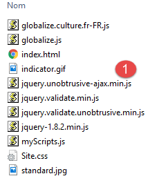

Aggiungiamo in [2] un file [config.xml] che verrà utilizzato per configurare il plugin [Phonegap], il quale genererà il binario Android. Il suo codice è il seguente:
<?xml version='1.0' encoding='utf-8'?>
<widget id="android.exemples.pam" version="0.0.1" xmlns="http://www.w3.org/ns/widgets" xmlns:cdv="http://cordova.apache.org/ns/1.0">
<name>Pam</name>
<description>
IstiA - Université d'Angers
</description>
<author email="serge.tahe@univ-angers.fr">
Serge Tahé
</author>
<content src="index.html" />
<access origin="*" />
<allow-navigation href="*" />
<allow-intent href="*" />
<plugin name="cordova-plugin-whitelist" />
</widget>
- righe 7-9: inserisci qui le tue informazioni di contatto;
- righe 11-13: queste righe consentono al JavaScript incorporato nell'applicazione web, che verrà eseguito sul dispositivo Android, di richiedere URL esterni al dispositivo;
Comprimiamo il contenuto della cartella [Content/bootstrap]:

Successivamente, vai al sito web di PhoneGap [http://build.phonegap.com/apps]:
 |
- Prima di [1], potrebbe essere necessario creare un account;
- in [1], iniziamo;
- in [2], scegli un piano gratuito che consenta una sola app PhoneGap;
- al punto [3], scarica l'app compressa [4];
 |
 |
- al punto [5], inserisci il nome dell'app;
- fare clic sul link [6] per compilare i file binari per iOS, Android e Windows. L'operazione potrebbe richiedere alcuni secondi;
 |
- In [7-9], scarica il file binario per Android;
 |
Avvia un emulatore [GenyMotion] per un tablet Android (vedi sezione 11.1):

Sopra, avviamo un emulatore di tablet con API Android 21. Una volta avviato l'emulatore,
- sbloccalo trascinando il lucchetto (se presente) di lato e poi rilasciandolo;
- Utilizzando il mouse, trascinare il file [Pam-debug.apk] scaricato e rilasciarlo sull'emulatore. Verrà quindi installato ed eseguito;
 |
Inserisci [1] l'URL del simulatore come descritto nella sezione 9.27.3. Una volta fatto, connettiti al simulatore utilizzando il link [2]:

Prova l'applicazione sull'emulatore. Dovrebbe funzionare.